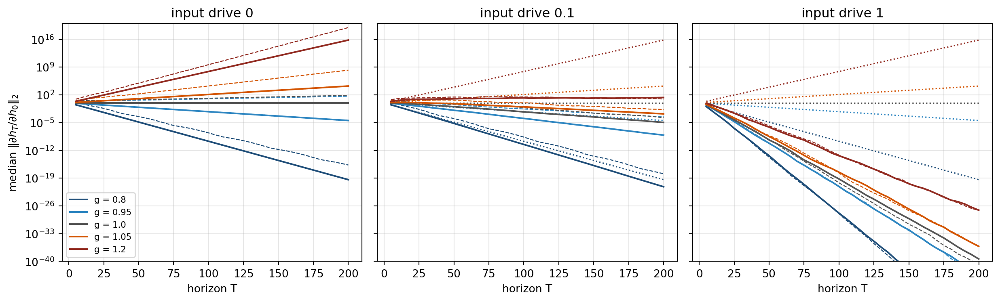
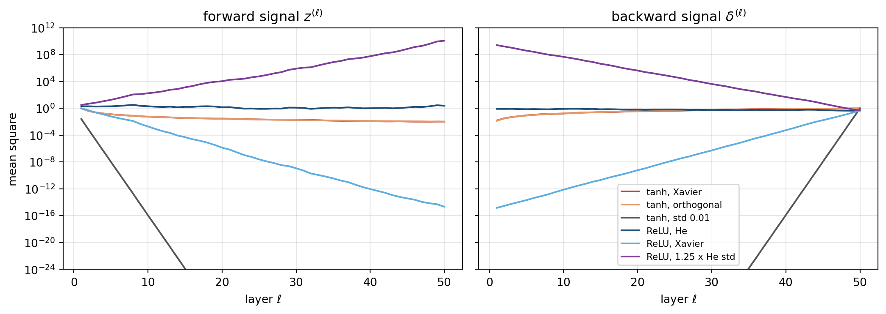
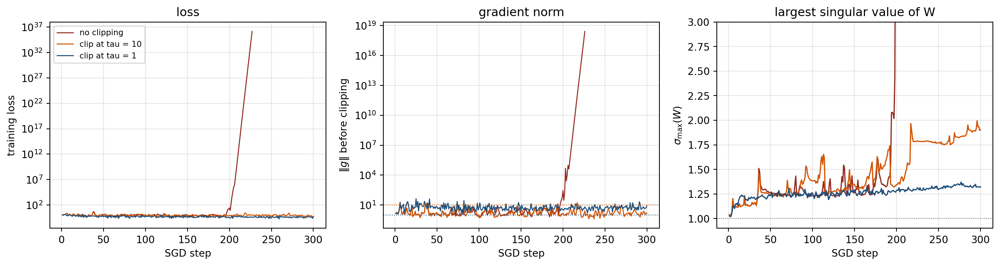
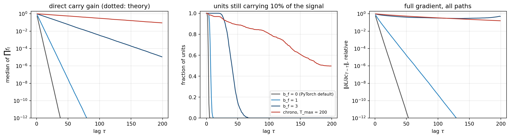
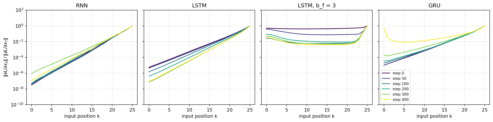

flowchart RL L["Loss gradient at output"] -->|"times J_L"| dL["delta at layer L"] dL -->|"times J_L minus 1"| dmid["delta at middle layers"] dmid -->|"times J ell plus 1"| de["delta at layer ell"] de --> note["Product of L minus ell Jacobians sets the magnitude"]
216 Vanishing and Exploding Gradients
Training deep and recurrent neural networks by gradient descent depends on the assumption that a useful learning signal can travel from the loss at the output back to parameters in the earliest layers. When that signal shrinks toward zero or grows without bound as it propagates, optimization stalls or diverges. These two failure modes, known as the vanishing gradient problem and the exploding gradient problem, were the central obstacle to training very deep architectures for much of the field’s history. This chapter develops the mathematics of why they arise, explains the roles of activation functions and weight initialization, and surveys the practical and architectural remedies that make modern deep learning feasible.
The unifying object behind both failure modes is a single quantity: the product of layerwise Jacobians that the chain rule assembles as it carries the error signal backward. Everything in this chapter, the choice of activation, the scale of the initial weights, normalization, residual paths, and gating, can be read as an attempt to keep the multiplicative factors of that product near one so the signal neither collapses nor diverges. We make that reading explicit by stating a precise condition for vanishing and explosion, working a small numerical example, and then organizing the remedies by which factor of the product each one controls.
Definitions
Vanishing gradients. The backpropagated error signal \(\delta^{(\ell)}\) at an early layer \(\ell\) decays toward zero as the depth \(L - \ell\) grows, so the gradient with respect to early parameters is negligible and those parameters effectively stop learning.
Exploding gradients. The signal \(\delta^{(\ell)}\) grows without bound as \(L - \ell\) grows, producing huge or numerically overflowing updates that destabilize or diverge the optimization.
Both are properties of the same product of Jacobians; they are the two ways a long matrix product can fail to be approximately norm preserving.
216.1 The Mechanics of Backpropagation Through Depth
Consider a feedforward network with \(L\) layers. Layer \(\ell\) computes a preactivation \(z^{(\ell)} = W^{(\ell)} a^{(\ell-1)} + b^{(\ell)}\) followed by an elementwise nonlinearity \(a^{(\ell)} = \phi(z^{(\ell)})\), with \(a^{(0)} = x\) the input. Let \(\mathcal{L}\) be a scalar loss. Backpropagation computes the error signal \(\delta^{(\ell)} = \partial \mathcal{L} / \partial z^{(\ell)}\) by the recursion
\[ \delta^{(\ell)} = \left( W^{(\ell+1)} \right)^{\top} \delta^{(\ell+1)} \odot \phi'\!\left(z^{(\ell)}\right), \]
where \(\odot\) is the Hadamard product. The gradient with respect to the weights of layer \(\ell\) is \(\partial \mathcal{L} / \partial W^{(\ell)} = \delta^{(\ell)} \left(a^{(\ell-1)}\right)^{\top}\).
Unrolling the recursion shows that the error signal at an early layer is a product of many Jacobian factors. Writing \(D^{(\ell)} = \operatorname{diag}\!\left(\phi'(z^{(\ell)})\right)\), the signal that reaches layer \(\ell\) from layer \(L\) is
\[ \delta^{(\ell)} = \left( \prod_{k=\ell+1}^{L} D^{(k)} \left(W^{(k)}\right)^{\top} \right) \delta^{(L)}_{\text{local}}. \]
The magnitude of \(\delta^{(\ell)}\) is therefore governed by the product of \(L - \ell\) matrices. Products of many matrices tend to behave either like a contraction, collapsing toward zero, or like an expansion, blowing up, unless their multiplicative factors are carefully balanced near one. This is the structural origin of both problems.
The following diagram traces a single error signal as it flows backward through the stack. Each arrow multiplies the signal by one Jacobian factor, and the cumulative product is what determines the regime.
216.2 A Quantitative Account of the Two Regimes
216.2.1 Scalar intuition
A single neuron chained through \(L\) layers makes the mechanism transparent. Suppose each layer multiplies the backpropagated signal by a scalar factor \(w \, \phi'(z)\). After \(L\) layers the signal scales by \(\left(w \, \phi'(z)\right)^{L}\). If \(|w \, \phi'(z)| < 1\), the factor decays geometrically and the gradient vanishes; if \(|w \, \phi'(z)| > 1\), it grows geometrically and the gradient explodes. Only the knife edge at exactly one preserves the signal, and random products do not sit on that edge by accident.
216.2.2 Spectral and norm bounds
The matrix case generalizes the scalar one through operator norms and singular values. Using submultiplicativity,
\[ \left\| \delta^{(\ell)} \right\| \le \left( \prod_{k=\ell+1}^{L} \left\| D^{(k)} \right\| \, \left\| W^{(k)} \right\| \right) \left\| \delta^{(L)}_{\text{local}} \right\|, \]
where \(\|W\|\) denotes the largest singular value. If every \(\|W^{(k)}\| \le \gamma\) and every activation derivative is bounded by \(\beta = \sup_z |\phi'(z)|\), then the signal is bounded above by \((\gamma \beta)^{L-\ell}\). When \(\gamma \beta < 1\) this upper bound decays exponentially, which guarantees vanishing. A complementary lower bound built from the smallest singular value shows that when the smallest singular value times the minimal activation slope exceeds one, the signal must grow exponentially. The product \(\gamma \beta\) relative to one is the single most important quantity to reason about.
216.2.3 The recurrent case
Recurrent networks make the problem acute because the same weight matrix is reused at every time step. A vanilla recurrent network computes
\[ a_t = W h_{t-1} + U x_t + b, \qquad h_t = \phi(a_t), \qquad t = 1, \dots, T, \tag{216.1}\]
from an initial state \(h_0\), with \(h_t \in \mathbb{R}^d\), \(x_t \in \mathbb{R}^m\), \(W \in \mathbb{R}^{d \times d}\) and \(U \in \mathbb{R}^{d \times m}\). The loss is a sum of per-step terms, \(\mathcal{L} = \sum_{t=1}^{T} \ell_t(h_t)\), and a sequence classifier is the special case in which only \(\ell_T\) is nonzero. The gated cells and the history of recurrent architectures are developed in Chapter 222. This section follows the gradient.
216.2.3.1 Backpropagation through time
Unrolling Equation 216.1 over \(T\) steps produces a feedforward network \(T\) layers deep in which every layer shares the parameters \((W, U, b)\). Backpropagation through time (BPTT) is ordinary backpropagation on that unrolled graph, and two facts organize its derivation. First, \(h_t\) reaches the loss along exactly two routes: directly through \(\ell_t\), and through \(h_{t+1}\), which reads \(h_t\) inside \(a_{t+1}\). Second, a parameter shared by \(T\) copies receives the sum of the gradients of the copies.
Define the total sensitivity \(\delta_t = \partial \mathcal{L} / \partial h_t \in \mathbb{R}^d\), which counts every path from \(h_t\) to the loss. The two routes give
\[ \delta_t = \frac{\partial \ell_t}{\partial h_t} + \left( \frac{\partial h_{t+1}}{\partial h_t} \right)^{\top} \delta_{t+1}, \qquad \delta_T = \frac{\partial \ell_T}{\partial h_T}. \]
The one-step Jacobian follows from the chain rule through \(a_{t+1}\). Because \(\phi\) acts elementwise, \(\partial h_{t+1} / \partial a_{t+1} = \operatorname{diag}\!\left(\phi'(a_{t+1})\right) =: D_{t+1}\), and \(\partial a_{t+1} / \partial h_t = W\). Hence
\[ \frac{\partial h_{t+1}}{\partial h_t} = D_{t+1} W, \qquad \delta_t = \frac{\partial \ell_t}{\partial h_t} + W^{\top} D_{t+1} \, \delta_{t+1}. \tag{216.2}\]
For the parameters, the copy of \(W\) used at step \(t\) enters only \(a_t\), and \(\partial \mathcal{L} / \partial a_t = D_t \delta_t\). The gradient with respect to a matrix that multiplies a vector is the outer product of the downstream signal with that vector, so summing over the \(T\) copies,
\[ \frac{\partial \mathcal{L}}{\partial W} = \sum_{t=1}^{T} \left( D_t \delta_t \right) h_{t-1}^{\top}, \qquad \frac{\partial \mathcal{L}}{\partial U} = \sum_{t=1}^{T} \left( D_t \delta_t \right) x_t^{\top}, \qquad \frac{\partial \mathcal{L}}{\partial b} = \sum_{t=1}^{T} D_t \delta_t . \tag{216.3}\]
Equation 216.2 is a linear recursion that runs backward in time, so it can be unrolled. Write the Jacobian between two states as the ordered product with the latest factor on the left,
\[ \frac{\partial h_t}{\partial h_k} = \prod_{j=k+1}^{t} D_j W = D_t W \, D_{t-1} W \cdots D_{k+1} W, \qquad k < t . \tag{216.4}\]
Substituting the recursion into itself gives \(\delta_k = \sum_{t \ge k} \left( \partial h_t / \partial h_k \right)^{\top} \partial \ell_t / \partial h_t\), with \(\partial h_k / \partial h_k = I\). Inserting this into Equation 216.3 and exchanging the order of summation,
\[ \frac{\partial \mathcal{L}}{\partial W} = \sum_{t=1}^{T} \sum_{k=1}^{t} D_k \left( \frac{\partial h_t}{\partial h_k} \right)^{\top} \frac{\partial \ell_t}{\partial h_t} \, h_{k-1}^{\top}. \tag{216.5}\]
Each term pairs a loss incurred at time \(t\) with a use of \(W\) at an earlier time \(k\) and carries the Jacobian product across the gap \(t - k\). Pascanu, Mikolov, and Bengio call the terms with a large gap the long-term components of the gradient [5]. The only factor whose size depends on the gap is Equation 216.4. If that product shrinks geometrically, the sum is dominated by its short-term components: the update is accurate about what happened a few steps ago and nearly blind to what happened long ago, although the long-term terms are formally present. This is why a vanilla recurrent network fails to learn long range dependencies even when its training is perfectly stable. Figure 216.1 draws the two passes on the unrolled graph.
flowchart LR h0["h 0"] --> h1["h 1"] h1 --> h2["h 2"] h2 --> hT["h T"] x1["x 1"] --> h1 x2["x 2"] --> h2 xT["x T"] --> hT h1 --> l1["loss l 1"] h2 --> l2["loss l 2"] hT --> lT["loss l T"] lT -.-> dT["delta T"] dT -.->|"times W transposed D"| d2["delta 2"] l2 -.-> d2 d2 -.->|"times W transposed D"| d1["delta 1"] l1 -.-> d1
The cell below checks the derivation in two ways. SymPy unrolls a three-step scalar recurrence with a loss at every step, differentiates it symbolically, and subtracts the BPTT sums of Equation 216.3 and the product of Equation 216.4. Then the matrix recursion Equation 216.2 is run in double precision for \(d = 8\) and \(T = 30\) and compared with PyTorch’s automatic differentiation.
Code
import numpy as np
import sympy as sp
import torch
torch.set_num_threads(1) # single-threaded CPU kernels: bitwise reproducible results in every cell below
# === Symbolic: scalar RNN unrolled for three steps, with a loss at every step
w, u, h0 = sp.symbols("w u h_0", real=True)
x = sp.symbols("x_1:4", real=True)
y = sp.symbols("y_1:4", real=True)
h = [h0]
for t in range(3):
h.append(sp.tanh(w * h[-1] + u * x[t]))
loss = sum((h[t] - y[t - 1]) ** 2 / 2 for t in range(1, 4))
# BPTT as derived: delta_3 = dl_3/dh_3, delta_t = dl_t/dh_t + w (1 - h_{t+1}^2) delta_{t+1},
# dL/dw = sum_t (1 - h_t^2) delta_t h_{t-1} and dL/du = sum_t (1 - h_t^2) delta_t x_t
delta = {3: h[3] - y[2]}
for t in (2, 1):
delta[t] = (h[t] - y[t - 1]) + w * (1 - h[t + 1] ** 2) * delta[t + 1]
bptt_w = sum(delta[t] * (1 - h[t] ** 2) * h[t - 1] for t in (1, 2, 3))
bptt_u = sum(delta[t] * (1 - h[t] ** 2) * x[t - 1] for t in (1, 2, 3))
product = sp.Mul(*[(1 - h[t] ** 2) * w for t in (1, 2, 3)])
print("SymPy, dL/dw minus the BPTT sum: ", sp.expand(sp.diff(loss, w) - bptt_w))
print("SymPy, dL/du minus the BPTT sum: ", sp.expand(sp.diff(loss, u) - bptt_u))
print("SymPy, dh_3/dh_0 minus prod (1 - h_t^2) w:", sp.expand(sp.diff(h[3], h0) - product))
# === Numeric: the matrix recursion against PyTorch autograd, d = 8, T = 30
torch.manual_seed(0)
d, T = 8, 30
W = (0.9 * torch.randn(d, d, dtype=torch.float64) / np.sqrt(d)).requires_grad_()
U = (torch.randn(d, d, dtype=torch.float64) / np.sqrt(d)).requires_grad_()
X, Y = torch.randn(T, d, dtype=torch.float64), torch.randn(T, d, dtype=torch.float64)
hs = [torch.zeros(d, dtype=torch.float64)]
for t in range(T):
hs.append(torch.tanh(W @ hs[-1] + U @ X[t]))
L = sum(0.5 * ((hs[t + 1] - Y[t]) ** 2).sum() for t in range(T))
L.backward()
with torch.no_grad():
H = torch.stack(hs)
dW = torch.zeros(d, d, dtype=torch.float64)
dU = torch.zeros(d, d, dtype=torch.float64)
delta = torch.zeros(d, dtype=torch.float64)
for t in range(T, 0, -1): # delta_t = dl_t/dh_t + W^T D_{t+1} delta_{t+1}
delta = (H[t] - Y[t - 1]) + (W.T @ ((1 - H[t + 1] ** 2) * delta) if t < T else 0)
g = (1 - H[t] ** 2) * delta # D_t delta_t
dW += torch.outer(g, H[t - 1])
dU += torch.outer(g, X[t - 1])
print(f"\nMatrix BPTT against autograd, d = {d}, T = {T}: "
f"max |dW difference| = {(dW - W.grad).abs().max():.1e}, max |dU difference| = {(dU - U.grad).abs().max():.1e}")SymPy, dL/dw minus the BPTT sum: 0
SymPy, dL/du minus the BPTT sum: 0
SymPy, dh_3/dh_0 minus prod (1 - h_t^2) w: 0
Matrix BPTT against autograd, d = 8, T = 30: max |dW difference| = 0.0e+00, max |dU difference| = 0.0e+00All three symbolic differences expand to exactly zero, so the adjoint recursion, the parameter sums and the Jacobian product are the derivative and not an approximation of it. The matrix recursion reproduces autograd with a maximum difference of exactly \(0\) in double precision: on this graph the hand-written recursion and the library perform the same arithmetic.
216.2.3.2 The spectral condition
The size of Equation 216.4 decides whether long-term components survive. The following statement turns that into a condition on the weights.
Spectral condition for vanishing and explosion (Bengio et al., 1994; Pascanu et al., 2013)
Let \(h_t = \phi(W h_{t-1} + U x_t + b)\), let \(\beta = \sup_z |\phi'(z)|\) be the maximal slope of the activation, and let \(\sigma_{\max}(W)\) be the largest singular value of \(W\). Then for all \(k < t\):
- Sufficient condition for vanishing. If \(\sigma_{\max}(W) < 1/\beta\), then \(\left\| \partial h_t / \partial h_k \right\|_2 \le \left( \beta \, \sigma_{\max}(W) \right)^{t-k}\), which tends to zero geometrically in the gap, so every long-term component of Equation 216.5 vanishes.
- Necessary condition for explosion. If \(\left\| \partial h_t / \partial h_k \right\|_2\) grows without bound as \(t - k \to \infty\), then \(\sigma_{\max}(W) > 1/\beta\). Gradients can explode only above the threshold, and crossing it does not guarantee that they will.
For \(\tanh\), \(\beta = 1\) and the threshold is \(\sigma_{\max}(W) = 1\). For the logistic sigmoid, \(\beta = 1/4\) and the threshold is \(\sigma_{\max}(W) = 4\) [1], [5].
Proof. Each factor of Equation 216.4 is \(D_j W\) with \(D_j\) diagonal and \(|(D_j)_{ii}| = |\phi'(a_{j,i})| \le \beta\). The operator 2-norm of a diagonal matrix is its largest absolute entry, so \(\|D_j\|_2 \le \beta\), and the operator norm is submultiplicative, so \(\|D_j W\|_2 \le \|D_j\|_2 \, \|W\|_2 \le \beta \, \sigma_{\max}(W)\). Applying submultiplicativity once more across the \(t - k\) factors,
\[ \left\| \frac{\partial h_t}{\partial h_k} \right\|_2 \le \prod_{j=k+1}^{t} \left\| D_j W \right\|_2 \le \left( \beta \, \sigma_{\max}(W) \right)^{t-k}. \tag{216.6}\]
If \(\beta \, \sigma_{\max}(W) < 1\) the right side decays geometrically, which is the first claim. For the second, suppose instead that \(\sigma_{\max}(W) \le 1/\beta\). Then every factor has norm at most one, Equation 216.6 bounds the product by one for every gap, and the Jacobian cannot grow without bound. Unbounded growth therefore forces \(\sigma_{\max}(W) > 1/\beta\), which is the second claim. Inserting Equation 216.6 into Equation 216.5 bounds the component that links a loss at \(t\) to a use of \(W\) at \(k\) by \(\beta \left( \beta \, \sigma_{\max}(W) \right)^{t-k} \left\| \partial \ell_t / \partial h_t \right\| \left\| h_{k-1} \right\|\). \(\square\)
Three remarks sharpen the statement.
Singular value or spectral radius. The condition is often quoted with the spectral radius \(\rho(W)\), the largest absolute eigenvalue. The two satisfy \(\rho(W) \le \sigma_{\max}(W)\), with equality when \(W\) is normal, which includes orthogonal and symmetric matrices. In the linear case \(\phi(z) = z\) every \(D_j\) is the identity, the Jacobian is \(W^{t-k}\), and Gelfand’s formula \(\lim_{n \to \infty} \|W^n\|^{1/n} = \rho(W)\) makes the spectral radius the asymptotic rate. For a non-normal \(W\) the singular value bound can be very loose: a Gaussian matrix with entries of variance \(g^2/d\) has \(\rho(W) \approx g\) by the circular law but \(\sigma_{\max}(W) \approx 2g\). With time-varying slopes \(D_j\) the product is no longer a power of one matrix, and \(\rho(W) < 1/\beta\) alone does not certify vanishing at every horizon, whereas Equation 216.6 always holds.
Necessary, not sufficient. There is no matching lower bound. The best general one is \(\left\| \partial h_t / \partial h_k \right\|_2 \ge \prod_j \sigma_{\min}(D_j W) \ge \prod_j \min_i |\phi'(a_{j,i})| \, \sigma_{\min}(W)\), and saturation drives \(\min_i |\phi'|\) toward zero. A recurrence with \(\sigma_{\max}(W) > 1\) explodes only while its states stay where \(\phi'\) is large. When the input pushes units into saturation, the slope factors shrink and the same \(W\) produces vanishing gradients. Autonomous random networks of this kind cross from a stable to a chaotic regime at gain one [17], and a sufficiently strong input suppresses that chaos [18]. The experiment below shows both effects in gradient terms.
A mean-field estimate of the rate. For \(W = gQ\) with \(Q\) a random orthogonal matrix, the typical per-step factor can be estimated rather than bounded. For a fixed vector \(v\), \(Qv\) points in a uniformly random direction, so \(\mathbb{E}\left[(Qv)_i^2\right] = \|v\|_2^2 / d\) for every coordinate. Treating the slopes as independent of the rotation, which is the mean-field approximation [16],
\[ \mathbb{E} \left\| D_j \, g Q \, v \right\|_2^2 = g^2 \sum_{i=1}^{d} \phi'(a_{j,i})^2 \, \mathbb{E}\left[(Qv)_i^2\right] = g^2 \left( \frac{1}{d} \sum_{i=1}^{d} \phi'(a_{j,i})^2 \right) \|v\|_2^2 . \]
For large \(d\) the per-step growth rate of the product therefore concentrates near
\[ r_{\text{mf}} = g \, \sqrt{\overline{\phi'^2}}, \qquad \overline{\phi'^2} = \text{the average of } \phi'(a_{j,i})^2 \text{ over units and steps}. \tag{216.7}\]
Equation 216.6 replaces \(\sqrt{\overline{\phi'^2}}\) by its worst case \(\beta\). The estimate uses its typical value, which is why saturation can make the true rate far smaller than the bound.
216.2.3.3 Experiment: the Jacobian product against the bound
The cell below runs a \(\tanh\) recurrence of width \(d = 64\) for \(T = 200\) steps, accumulates \(J_T = \partial h_T / \partial h_0\) with Equation 216.4, and records its spectral norm. The recurrent matrix is either \(gQ\) with \(Q\) a random orthogonal matrix, so that \(\sigma_{\max}(W) = \rho(W) = g\) exactly, or a Gaussian matrix with entry variance \(g^2/d\). The input term \(U x_t\) is replaced by independent \(\mathcal{N}(0, s^2)\) noise with drive \(s \in \{0, 0.1, 1\}\), and \(h_0 = 0\). With \(s = 0\) the state never leaves the fixed point \(h_t = 0\), every \(D_j\) is the identity, and the experiment measures the linearization. Every number is the median over five random matrices.
Code
import numpy as np
import pandas as pd
import matplotlib.pyplot as plt
d, T_max, n_seeds = 64, 200, 5
gains = [0.8, 0.95, 1.0, 1.05, 1.2]
drives = [0.0, 0.1, 1.0] # standard deviation of the input term U x_t
def make_W(kind, g, rng):
G = rng.standard_normal((d, d))
if kind == "orthogonal":
Q, R = np.linalg.qr(G)
return g * Q * np.sign(np.diag(R)) # Haar orthogonal: every singular value equals g
return g * G / np.sqrt(d) # circular law: rho(W) near g, sigma_max(W) near 2g
def bptt_norms(W, drive, rng):
# h_t = tanh(W h_{t-1} + u_t) and J_t = dh_t/dh_0 = D_t W J_{t-1}, with D_t = diag(1 - h_t^2)
h, J = np.zeros(d), np.eye(d)
norms, slope_sq = [], np.empty(T_max)
for t in range(1, T_max + 1):
h = np.tanh(W @ h + drive * rng.standard_normal(d))
D = 1.0 - h**2
J = D[:, None] * (W @ J)
slope_sq[t - 1] = np.mean(D**2)
if t % 5 == 0:
norms.append(np.linalg.norm(J, 2))
return np.array(norms), slope_sq.mean()
rows, curves = [], {}
for kind in ["orthogonal", "gaussian"]:
for g in gains:
row = {"init": kind, "g": g}
for drive in drives:
runs, rho, smax, msq = [], [], [], []
for s in range(n_seeds):
rng = np.random.default_rng(1000 * s + int(100 * g))
W = make_W(kind, g, rng)
rho.append(np.abs(np.linalg.eigvals(W)).max())
smax.append(np.linalg.norm(W, 2))
n, m = bptt_norms(W, drive, rng)
runs.append(n)
msq.append(m)
med = np.exp(np.median(np.log(np.array(runs)), axis=0))
curves[(kind, g, drive)] = med
row["rho(W)"], row["sigma_max(W)"] = np.mean(rho), np.mean(smax)
row[f"rate, drive {drive:g}"] = med[-1] ** (1 / T_max)
row[f"mean field, drive {drive:g}"] = g * np.sqrt(np.mean(msq))
rows.append(row)
res = pd.DataFrame(rows)
cols = ["init", "g", "rho(W)", "sigma_max(W)"] + [f"rate, drive {x:g}" for x in drives] + \
[f"mean field, drive {x:g}" for x in drives[1:]]
print("Per-step rate ||dh_T/dh_0||_2^(1/T) at T = 200 (median of 5 seeds), tanh RNN, d = 64")
print(res[cols].round(3).to_string(index=False))
print("\nOrthogonal W: median ||dh_T/dh_0||_2 against the bound sigma_max(W)^T")
tab = []
for g in gains:
for drive in drives:
med = curves[("orthogonal", g, drive)]
tab.append({"g": g, "drive": drive, "T=10": med[1], "T=50": med[9], "T=200": med[-1],
"bound T=200": g ** 200})
print(pd.DataFrame(tab).to_string(index=False, formatters={c: (lambda v: f"{v:.1e}")
for c in ["T=10", "T=50", "T=200", "bound T=200"]}))
colors = dict(zip(gains, ["#1f4e79", "#2e86c1", "#555555", "#d35400", "#922b21"]))
fig, axes = plt.subplots(1, 3, figsize=(13, 4), sharey=True)
Ts = np.arange(5, T_max + 1, 5)
for ax, drive in zip(axes, drives):
for g in gains:
ax.semilogy(Ts, g ** Ts, color=colors[g], ls=":", lw=1.2)
ax.semilogy(Ts, curves[("orthogonal", g, drive)], color=colors[g], label=f"g = {g}")
ax.semilogy(Ts, curves[("gaussian", g, drive)], color=colors[g], ls="--", lw=0.9)
ax.set(xlabel="horizon T", title=f"input drive {drive:g}", ylim=(1e-40, 1e20))
ax.grid(alpha=0.3)
axes[0].set_ylabel(r"median $\|\partial h_T / \partial h_0\|_2$")
axes[0].legend(fontsize=8, loc="lower left")
plt.tight_layout()
plt.show()Per-step rate ||dh_T/dh_0||_2^(1/T) at T = 200 (median of 5 seeds), tanh RNN, d = 64
init g rho(W) sigma_max(W) rate, drive 0 rate, drive 0.1 rate, drive 1 mean field, drive 0.1 mean field, drive 1
orthogonal 0.80 0.800 0.800 0.800 0.784 0.520 0.781 0.518
orthogonal 0.95 0.950 0.950 0.950 0.911 0.609 0.905 0.605
orthogonal 1.00 1.000 1.000 1.000 0.945 0.635 0.939 0.633
orthogonal 1.05 1.050 1.050 1.050 0.969 0.659 0.961 0.659
orthogonal 1.20 1.200 1.200 1.200 1.016 0.732 1.005 0.731
gaussian 0.80 0.833 1.557 0.835 0.814 0.511 0.781 0.518
gaussian 0.95 1.015 1.870 1.019 0.960 0.607 0.903 0.603
gaussian 1.00 1.026 1.941 1.022 0.958 0.622 0.938 0.633
gaussian 1.05 1.121 2.026 1.100 0.981 0.658 0.934 0.658
gaussian 1.20 1.242 2.342 1.244 1.011 0.732 0.992 0.734
Orthogonal W: median ||dh_T/dh_0||_2 against the bound sigma_max(W)^T
g drive T=10 T=50 T=200 bound T=200
0.80 0.0 1.1e-01 1.4e-05 4.1e-20 4.1e-20
0.80 0.1 9.9e-02 6.6e-06 6.9e-22 4.1e-20
0.80 1.0 5.5e-03 4.6e-14 1.5e-57 4.1e-20
0.95 0.0 6.0e-01 7.7e-02 3.5e-05 3.5e-05
0.95 0.1 5.2e-01 1.3e-02 7.4e-09 3.5e-05
0.95 1.0 2.9e-02 6.5e-11 7.3e-44 3.5e-05
1.00 0.0 1.0e+00 1.0e+00 1.0e+00 1.0e+00
1.00 0.1 8.5e-01 1.1e-01 1.2e-05 1.0e+00
1.00 1.0 4.0e-02 4.4e-10 4.0e-40 1.0e+00
1.05 0.0 1.6e+00 1.1e+01 1.7e+04 1.7e+04
1.05 0.1 1.3e+00 6.1e-01 1.7e-03 1.7e+04
1.05 1.0 5.6e-02 3.2e-09 6.4e-37 1.7e+04
1.20 0.0 6.2e+00 9.1e+03 6.9e+15 6.9e+15
1.20 0.1 4.2e+00 1.1e+01 2.2e+01 6.9e+15
1.20 1.0 2.0e-01 7.6e-07 8.3e-28 6.9e+15
The left panel of Figure 216.2 is the theorem with nothing in the way. Without input, the orthogonal curves sit exactly on the bound: the measured rates are \(0.800\), \(0.950\), \(1.000\), \(1.050\) and \(1.200\), and at \(T = 200\) the norm is \(4.1 \times 10^{-20}\) for \(g = 0.8\) and \(6.9 \times 10^{15}\) for \(g = 1.2\), both equal to \(g^{200}\). The Gaussian matrices show why the spectral radius is the right asymptotic rate in the linear case and the singular value is the right bound. Their \(\sigma_{\max}(W)\) runs from \(1.557\) to \(2.342\), close to \(2g\), yet the measured rates \(0.835\), \(1.019\), \(1.022\), \(1.100\) and \(1.244\) track \(\rho(W) = 0.833\), \(1.015\), \(1.026\), \(1.121\) and \(1.242\). The sample at nominal \(g = 0.95\) has \(\rho(W) = 1.015\), above one, and its gradient grows.
Input changes the picture without changing \(W\). At drive \(0.1\) the orthogonal rates fall to \(0.784\), \(0.911\), \(0.945\), \(0.969\) and \(1.016\): the gradient for \(g = 1.05\) now vanishes, reaching \(1.7 \times 10^{-3}\) at \(T = 200\) against a bound of \(1.7 \times 10^{4}\), and only \(g = 1.2\) still grows, to \(22\) against \(6.9 \times 10^{15}\). At drive \(1\) every curve vanishes, with rates between \(0.511\) and \(0.732\); even \(g = 1.2\), comfortably above the explosion threshold, delivers \(8.3 \times 10^{-28}\) after 200 steps. That is the necessary but not sufficient half of the theorem made visible. The mean-field estimate Equation 216.7 predicts the orthogonal rates to within \(0.011\) at drive \(0.1\) and within \(0.005\) at drive \(1\) (\(0.518\), \(0.605\), \(0.633\), \(0.659\) and \(0.731\) against \(0.520\), \(0.609\), \(0.635\), \(0.659\) and \(0.732\)), so the gap between the bound and the truth is almost entirely the gap between \(\beta = 1\) and the typical slope.
216.2.3.4 Reference implementation
The core routine is short enough to write without any library: run the recurrence, multiply the Jacobian by \(D_t W\) at each step, and measure its spectral norm by power iteration on \(J^\top J\). The three tabs below use a deterministic \(4 \times 4\) matrix \(W_{ij} = 0.5\, g \sin(1.3 i + 0.7 j)\), inputs \(0.3 \cos(0.9 t + 1.1 i)\) and \(h_0 = 0\), so they print identical numbers.
Code
import math
D, T_MAX, REPORT = 4, 40, (1, 5, 10, 20, 40)
def matmul(A, B):
return [[sum(A[i][k] * B[k][j] for k in range(D)) for j in range(D)] for i in range(D)]
def spectral_norm(A, iters=500):
# Power iteration on A^T A, started from the all-ones vector.
v = [1.0] * D
for _ in range(iters):
Av = [sum(A[i][k] * v[k] for k in range(D)) for i in range(D)]
w = [sum(A[k][i] * Av[k] for k in range(D)) for i in range(D)]
s = math.sqrt(sum(x * x for x in w))
v = [x / s for x in w]
Av = [sum(A[i][k] * v[k] for k in range(D)) for i in range(D)]
return math.sqrt(sum(x * x for x in Av))
def bptt_norms(g):
W = [[g * 0.5 * math.sin(1.3 * (i + 1) + 0.7 * (j + 1)) for j in range(D)] for i in range(D)]
h = [0.0] * D
J = [[1.0 if i == j else 0.0 for j in range(D)] for i in range(D)]
s_max, out = spectral_norm(W), []
for t in range(1, T_MAX + 1):
a = [sum(W[i][k] * h[k] for k in range(D)) + 0.3 * math.cos(0.9 * t + 1.1 * (i + 1))
for i in range(D)]
h = [math.tanh(x) for x in a]
WJ = matmul(W, J)
J = [[(1.0 - h[i] ** 2) * WJ[i][j] for j in range(D)] for i in range(D)] # J_t = D_t W J_(t-1)
if t in REPORT:
out.append((t, spectral_norm(J), s_max ** t))
return s_max, out
for g in (0.8, 1.6):
s_max, rows = bptt_norms(g)
print(f"g = {g}: sigma_max(W) = {s_max:.6f}")
for t, n, b in rows:
print(f" T = {t:2d} ||dh_T/dh_0||_2 = {n:.6e} bound sigma_max^T = {b:.6e}")g = 0.8: sigma_max(W) = 0.844165
T = 1 ||dh_T/dh_0||_2 = 8.121715e-01 bound sigma_max^T = 8.441654e-01
T = 5 ||dh_T/dh_0||_2 = 2.029080e-01 bound sigma_max^T = 4.286844e-01
T = 10 ||dh_T/dh_0||_2 = 4.977876e-02 bound sigma_max^T = 1.837703e-01
T = 20 ||dh_T/dh_0||_2 = 3.053579e-03 bound sigma_max^T = 3.377152e-02
T = 40 ||dh_T/dh_0||_2 = 1.101402e-05 bound sigma_max^T = 1.140515e-03
g = 1.6: sigma_max(W) = 1.688331
T = 1 ||dh_T/dh_0||_2 = 1.624343e+00 bound sigma_max^T = 1.688331e+00
T = 5 ||dh_T/dh_0||_2 = 6.745982e-01 bound sigma_max^T = 1.371790e+01
T = 10 ||dh_T/dh_0||_2 = 1.643929e-02 bound sigma_max^T = 1.881808e+02
T = 20 ||dh_T/dh_0||_2 = 2.309365e-05 bound sigma_max^T = 3.541200e+04
T = 40 ||dh_T/dh_0||_2 = 3.501137e-11 bound sigma_max^T = 1.254010e+09using Printf
const D, T_MAX, REPORT = 4, 40, (1, 5, 10, 20, 40)
# Power iteration on A' * A, started from the all-ones vector.
function spectral_norm(A; iters = 500)
v = ones(D)
for _ in 1:iters
w = A' * (A * v)
v = w ./ sqrt(sum(abs2, w))
end
return sqrt(sum(abs2, A * v))
end
function bptt_norms(g)
W = [g * 0.5 * sin(1.3 * i + 0.7 * j) for i in 1:D, j in 1:D]
h = zeros(D)
J = Matrix{Float64}(undef, D, D)
for i in 1:D, j in 1:D
J[i, j] = i == j ? 1.0 : 0.0
end
s_max, out = spectral_norm(W), Tuple{Int,Float64,Float64}[]
for t in 1:T_MAX
a = W * h .+ [0.3 * cos(0.9 * t + 1.1 * i) for i in 1:D]
h = tanh.(a)
J = (1.0 .- h .^ 2) .* (W * J) # J_t = D_t W J_(t-1)
t in REPORT && push!(out, (t, spectral_norm(J), s_max^t))
end
return s_max, out
end
for g in (0.8, 1.6)
s_max, rows = bptt_norms(g)
@printf("g = %.1f: sigma_max(W) = %.6f\n", g, s_max)
for (t, n, b) in rows
@printf(" T = %2d ||dh_T/dh_0||_2 = %.6e bound sigma_max^T = %.6e\n", t, n, b)
end
endconst D: usize = 4;
const T_MAX: usize = 40;
const REPORT: [usize; 5] = [1, 5, 10, 20, 40];
type Mat = [[f64; D]; D];
fn matvec(a: &Mat, v: &[f64; D]) -> [f64; D] {
let mut out = [0.0; D];
for i in 0..D {
out[i] = (0..D).map(|k| a[i][k] * v[k]).sum();
}
out
}
fn matvec_t(a: &Mat, v: &[f64; D]) -> [f64; D] {
let mut out = [0.0; D];
for i in 0..D {
out[i] = (0..D).map(|k| a[k][i] * v[k]).sum();
}
out
}
fn norm(v: &[f64; D]) -> f64 {
v.iter().map(|x| x * x).sum::<f64>().sqrt()
}
/// Power iteration on A^T A, started from the all-ones vector.
fn spectral_norm(a: &Mat) -> f64 {
let mut v = [1.0; D];
for _ in 0..500 {
let w = matvec_t(a, &matvec(a, &v));
let s = norm(&w);
for i in 0..D {
v[i] = w[i] / s;
}
}
norm(&matvec(a, &v))
}
/// Scientific notation with a signed two-digit exponent, as printf's %.6e.
fn sci(x: f64) -> String {
let s = format!("{:.6e}", x);
let (m, e) = s.split_once('e').unwrap();
let e: i32 = e.parse().unwrap();
format!("{}e{}{:02}", m, if e < 0 { '-' } else { '+' }, e.abs())
}
fn bptt_norms(g: f64) -> (f64, Vec<(usize, f64, f64)>) {
let mut w: Mat = [[0.0; D]; D];
let mut j: Mat = [[0.0; D]; D];
for r in 0..D {
for c in 0..D {
w[r][c] = g * 0.5 * (1.3 * (r + 1) as f64 + 0.7 * (c + 1) as f64).sin();
}
j[r][r] = 1.0;
}
let s_max = spectral_norm(&w);
let mut h = [0.0; D];
let mut out = Vec::new();
for t in 1..=T_MAX {
let wh = matvec(&w, &h);
for i in 0..D {
h[i] = (wh[i] + 0.3 * (0.9 * t as f64 + 1.1 * (i + 1) as f64).cos()).tanh();
}
let mut next: Mat = [[0.0; D]; D];
for r in 0..D {
for c in 0..D {
let wj: f64 = (0..D).map(|k| w[r][k] * j[k][c]).sum();
next[r][c] = (1.0 - h[r] * h[r]) * wj; // J_t = D_t W J_(t-1)
}
}
j = next;
if REPORT.contains(&t) {
out.push((t, spectral_norm(&j), s_max.powi(t as i32)));
}
}
(s_max, out)
}
fn main() {
for g in [0.8, 1.6] {
let (s_max, rows) = bptt_norms(g);
println!("g = {:.1}: sigma_max(W) = {:.6}", g, s_max);
for (t, n, b) in rows {
println!(" T = {:2} ||dh_T/dh_0||_2 = {} bound sigma_max^T = {}", t, sci(n), sci(b));
}
}
}All three print the same twelve lines. For \(g = 0.8\), \(\sigma_{\max}(W) = 0.844165\) and the norm at \(T = 40\) is \(1.101402 \times 10^{-5}\), about a hundred times below the bound \(1.140515 \times 10^{-3}\). For \(g = 1.6\), \(\sigma_{\max}(W) = 1.688331\) exceeds one, so the necessary condition for explosion holds and the bound climbs to \(1.254010 \times 10^{9}\) at \(T = 40\). The actual norm falls to \(3.501137 \times 10^{-11}\), because the larger weights push the states into the flat tails of \(\tanh\).
Sequences thousands of steps long amplify even tiny deviations from one into enormous or negligible factors, which is why vanilla recurrent networks struggle to learn long range dependencies.
Worked example: how fast the signal moves
Take a \(\tanh\) recurrence (\(\beta = 1\)) whose backward factors each contribute an effective scalar gain \(r\) per step. After \(T\) steps the signal scales by \(r^{T}\). The numbers are stark.
| Per-step gain \(r\) | After \(T = 10\) | After \(T = 100\) |
|---|---|---|
| \(0.9\) (mild contraction) | \(0.35\) | \(2.7 \times 10^{-5}\) |
| \(0.99\) (near critical) | \(0.90\) | \(0.37\) |
| \(1.01\) (near critical) | \(1.10\) | \(2.7\) |
| \(1.1\) (mild expansion) | \(2.6\) | \(1.4 \times 10^{4}\) |
A gain of \(0.9\), which looks harmless over a few steps, has already destroyed five orders of magnitude of signal over a hundred steps, while a gain of \(1.1\) inflates it by four. Only the near critical gains of \(0.99\) and \(1.01\) keep the signal usable across a long horizon, and they sit on a knife edge that drifting weights rarely hold. This single table is the whole problem in miniature: the regime is set by whether the per-step gain sits just below, at, or just above one, and the effect compounds exponentially in the horizon.
216.3 The Role of Activation Functions
The activation derivative \(\phi'\) enters every factor of the product, so its typical magnitude directly controls the regime.
216.3.1 Saturating nonlinearities
The logistic sigmoid \(\sigma(z) = 1/(1 + e^{-z})\) has derivative \(\sigma'(z) = \sigma(z)(1 - \sigma(z))\), which peaks at \(0.25\) when \(z = 0\) and falls toward zero as \(|z|\) grows. The hyperbolic tangent has derivative \(\tanh'(z) = 1 - \tanh^2(z)\), peaking at one but also collapsing in the saturated tails. Two consequences follow. First, even in the best case the sigmoid attenuates the signal by a factor of at least four per layer, so a stack of sigmoids vanishes quickly. Second, once a unit saturates, its derivative is nearly zero and it stops passing any signal, a state from which it rarely recovers.
216.3.2 Piecewise linear nonlinearities
The rectified linear unit \(\operatorname{ReLU}(z) = \max(0, z)\) has derivative equal to one for positive preactivations and zero otherwise. On the active path the derivative is exactly one, so \(\phi'\) no longer shrinks the signal multiplicatively, which is the main reason ReLU networks train at far greater depth than sigmoid networks. The price is the dead unit phenomenon: a neuron whose preactivation is negative for all inputs receives no gradient and never updates. Variants address this by giving the negative branch a nonzero slope. The leaky ReLU uses \(\phi(z) = \max(\alpha z, z)\) with a small fixed \(\alpha\), the parametric ReLU learns \(\alpha\), and the exponential linear unit and GELU provide smooth alternatives with similar gradient preserving behavior. The shared theme is keeping \(|\phi'|\) near one over the operating range.
216.4 Weight Initialization
If activation slopes are kept near one, the remaining control variable is the scale of the weights, fixed at initialization. The goal is to choose the initial distribution so that the variance of activations in the forward pass and the variance of gradients in the backward pass are preserved across layers.
216.4.1 Variance propagation
Assume weights are drawn independently with mean zero and variance \(\operatorname{Var}(W)\), inputs are normalized, and the nonlinearity is roughly linear near the origin. For a layer with \(n_{\text{in}}\) inputs, the variance of a preactivation is approximately \(n_{\text{in}} \operatorname{Var}(W) \operatorname{Var}(a)\). To keep \(\operatorname{Var}(z) = \operatorname{Var}(a)\) across the forward pass we need \(n_{\text{in}} \operatorname{Var}(W) = 1\). Symmetrically, preserving gradient variance in the backward pass requires \(n_{\text{out}} \operatorname{Var}(W) = 1\).
The linearity assumption can be dropped. Take a stack of width \(n\) with weights drawn independently with mean zero and variance \(s^2\), and let \(q^{(\ell)} = \mathbb{E}\big[(z^{(\ell)}_i)^2\big]\) be the second moment of a preactivation. Because \(z^{(\ell)}_i = \sum_j W^{(\ell)}_{ij} a^{(\ell-1)}_j\) is a sum of \(n\) independent zero-mean terms, \(\mathbb{E}\big[(z^{(\ell)}_i)^2\big] = \sum_j \mathbb{E}\big[(W^{(\ell)}_{ij})^2\big] \, \mathbb{E}\big[(a^{(\ell-1)}_j)^2\big]\), and by the central limit theorem \(z^{(\ell-1)}\) is close to Gaussian when \(n\) is large. In the backward pass, \(\delta^{(\ell)}_i = \phi'(z^{(\ell)}_i) \sum_j W^{(\ell+1)}_{ji} \delta^{(\ell+1)}_j\), and treating the weights seen by the backward pass as independent of the forward activations, the standard assumption of mean-field analyses [11], gives the same structure. Together,
\[ q^{(\ell)} = n s^2 \, \mathbb{E}_{z \sim \mathcal{N}(0,\, q^{(\ell-1)})}\!\left[ \phi(z)^2 \right], \qquad \mathbb{E}\big[(\delta^{(\ell)}_i)^2\big] = \underbrace{n s^2 \, \mathbb{E}_{z \sim \mathcal{N}(0,\, q^{(\ell)})}\!\left[ \phi'(z)^2 \right]}_{\chi^{(\ell)}} \, \mathbb{E}\big[(\delta^{(\ell+1)}_i)^2\big]. \tag{216.8}\]
Two activations make Equation 216.8 explicit. For ReLU and a symmetric \(z\), half of the Gaussian mass is zeroed, so \(\mathbb{E}[\operatorname{ReLU}(z)^2] = q/2\) and \(\mathbb{E}[\operatorname{ReLU}'(z)^2] = 1/2\). Both the forward second moment and the backward one are multiplied by \(n s^2 / 2\) per layer, which equals one exactly when \(s^2 = 2/n\). For \(\tanh\) at \(n s^2 = 1\), expand \(\tanh(z) = z - z^3/3 + O(z^5)\), so \(\tanh(z)^2 = z^2 - \tfrac{2}{3} z^4 + O(z^6)\), and use \(\mathbb{E}[z^4] = 3q^2\):
\[ q^{(\ell)} = q^{(\ell-1)} - 2 \big(q^{(\ell-1)}\big)^2 + O\big((q^{(\ell-1)})^3\big), \qquad \frac{1}{q^{(\ell)}} \approx \frac{1}{q^{(\ell-1)}} + 2, \qquad q^{(\ell)} \approx \frac{1}{1/q^{(1)} + 2(\ell - 1)} . \tag{216.9}\]
The middle step uses \(1/(q - 2q^2) = (1/q)/(1 - 2q) \approx 1/q + 2\). At the critical scale a \(\tanh\) stack therefore still loses signal, but algebraically, like \(1/(2\ell)\), rather than geometrically.
216.4.2 Xavier and He schemes
Glorot and Bengio reconciled the two conditions by compromising on the harmonic mean of fan in and fan out, giving the Xavier initialization
\[ \operatorname{Var}(W) = \frac{2}{n_{\text{in}} + n_{\text{out}}}, \]
which is appropriate for symmetric activations such as \(\tanh\) [2]. Rectifiers zero out half of their inputs in expectation, halving the variance per layer, so He and colleagues corrected the factor to
\[ \operatorname{Var}(W) = \frac{2}{n_{\text{in}}}, \]
which restores signal scale for ReLU networks and enabled the training of very deep convolutional models [3]. A useful refinement for deep linear and ReLU stacks is orthogonal initialization, which sets the singular values of each weight matrix to one so the Jacobian product is an isometry at the start of training, a condition associated with the dynamical regime of stable signal propagation [4]. The stronger goal of making the entire input-output Jacobian close to an isometry, with all of its singular values concentrated near one rather than only its norm controlled, is called dynamical isometry, and mean field analysis shows it can be achieved for very deep networks by combining orthogonal weights with carefully chosen nonlinearities, which empirically permits training networks tens of thousands of layers deep without normalization or skip connections [11].
The cell below propagates a batch of 512 unit-variance inputs through 50 layers of width \(n = 256\) under six schemes, with standard deviation \(\sqrt{2/n}\) for He, \(\sqrt{2/(n_{\text{in}} + n_{\text{out}})} = \sqrt{1/n}\) for Xavier, and an orthonormal matrix for the orthogonal scheme. A fixed random readout at the top supplies a zero-mean error signal, and autograd returns \(\delta^{(\ell)}\) at every layer. The measured second moments are compared with the recursion Equation 216.8, evaluated by Gauss-Hermite quadrature.
Code
import numpy as np
import pandas as pd
import torch
import matplotlib.pyplot as plt
L, n, B = 50, 256, 512
SCHEMES = { # name: (activation, weight std for fan-in = fan-out = n; None means orthogonal)
"tanh, Xavier": (torch.tanh, np.sqrt(2 / (n + n))),
"tanh, orthogonal": (torch.tanh, None),
"tanh, std 0.01": (torch.tanh, 0.01),
"ReLU, He": (torch.relu, np.sqrt(2 / n)),
"ReLU, Xavier": (torch.relu, np.sqrt(2 / (n + n))),
"ReLU, 1.25 x He std": (torch.relu, 1.25 * np.sqrt(2 / n)),
}
gen = torch.Generator().manual_seed(0)
x = torch.randn(B, n, generator=gen)
r = torch.randn(B, n, generator=gen) # fixed random readout, so the output signal has mean zero
fwd, bwd = {}, {}
for name, (phi, std) in SCHEMES.items():
gen = torch.Generator().manual_seed(1)
a, zs = x.clone().requires_grad_(), []
for _ in range(L):
if std is None:
W = torch.nn.init.orthogonal_(torch.empty(n, n), generator=gen)
else:
W = std * torch.randn(n, n, generator=gen)
z = a @ W.T
z.retain_grad()
zs.append(z)
a = phi(z)
(a * r).sum().backward() # delta^(L) = r * phi'(z^(L))
fwd[name] = [z.detach().pow(2).mean().item() for z in zs] # second moment of z^(l)
bwd[name] = [z.grad.pow(2).mean().item() for z in zs] # second moment of delta^(l)
layers = [1, 10, 25, 50]
fmt = lambda v: f"{v:.1e}"
print("Forward: mean of (z^(l))^2 at layer l")
print(pd.DataFrame({k: [v[l - 1] for l in layers] for k, v in fwd.items()},
index=pd.Index(layers, name="layer")).map(fmt).to_string())
print("\nBackward: mean of (delta^(l))^2 at layer l")
print(pd.DataFrame({k: [v[l - 1] for l in layers] for k, v in bwd.items()},
index=pd.Index(layers, name="layer")).map(fmt).to_string())
# Mean-field recursion: q_l = n s^2 E[phi(z)^2] and E[delta_l^2] = n s^2 E[phi'(z_l)^2] E[delta_{l+1}^2],
# with z ~ N(0, q); expectations by 60-point Gauss-Hermite quadrature.
nodes, weights = np.polynomial.hermite_e.hermegauss(60)
weights = weights / weights.sum()
E = lambda f, q: float(np.sum(weights * f(np.sqrt(q) * nodes)))
PHI = {torch.tanh: (np.tanh, lambda z: 1 - np.tanh(z) ** 2),
torch.relu: (lambda z: np.maximum(z, 0), lambda z: (z > 0).astype(float))}
rows = []
for name, (phi, std) in SCHEMES.items():
f, df = PHI[phi]
gain = 1.0 if std is None else n * std**2 # n s^2; orthogonal rows have unit norm
q = [gain * 1.0] # the inputs have unit second moment
for _ in range(L - 1):
q.append(gain * E(lambda z: f(z) ** 2, q[-1]))
dl = E(lambda z: df(z) ** 2, q[-1]) # E[(r phi'(z_L))^2]
for ell in range(L - 2, -1, -1):
dl *= gain * E(lambda z: df(z) ** 2, q[ell])
rows.append({"scheme": name, "fwd layer 50": fwd[name][-1], "fwd predicted": q[-1],
"bwd layer 1": bwd[name][0], "bwd predicted": dl})
print("\nMeasured against the mean-field recursion")
print(pd.DataFrame(rows).to_string(index=False, formatters={c: fmt for c in rows[0] if c != "scheme"}))
colors = ["#c0392b", "#e59866", "#555555", "#1f4e79", "#5dade2", "#7d3c98"]
fig, axes = plt.subplots(1, 2, figsize=(11, 4), sharey=True)
ell = np.arange(1, L + 1)
for name, c in zip(SCHEMES, colors):
axes[0].semilogy(ell, fwd[name], color=c, label=name)
axes[1].semilogy(ell, bwd[name], color=c, label=name)
axes[0].set(xlabel=r"layer $\ell$", ylabel="mean square", title=r"forward signal $z^{(\ell)}$",
ylim=(1e-24, 1e12))
axes[1].set(xlabel=r"layer $\ell$", title=r"backward signal $\delta^{(\ell)}$")
for ax in axes:
ax.grid(alpha=0.3)
axes[1].legend(fontsize=8)
plt.tight_layout()
plt.show()Forward: mean of (z^(l))^2 at layer l
tanh, Xavier tanh, orthogonal tanh, std 0.01 ReLU, He ReLU, Xavier ReLU, 1.25 x He std
layer
1 1.0e+00 1.0e+00 2.6e-02 2.0e+00 1.0e+00 3.2e+00
10 5.7e-02 5.8e-02 1.2e-16 2.0e+00 2.0e-03 1.8e+02
25 2.2e-02 2.2e-02 1.7e-40 8.3e-01 2.5e-08 5.8e+04
50 1.0e-02 1.0e-02 0.0e+00 2.5e+00 2.2e-15 1.2e+10
Backward: mean of (delta^(l))^2 at layer l
tanh, Xavier tanh, orthogonal tanh, std 0.01 ReLU, He ReLU, Xavier ReLU, 1.25 x He std
layer
1 1.6e-02 1.4e-02 0.0e+00 8.3e-01 1.5e-15 2.6e+09
10 1.7e-01 1.8e-01 0.0e+00 8.3e-01 7.5e-13 4.7e+07
25 4.3e-01 4.8e-01 1.5e-40 6.6e-01 2.0e-08 4.6e+04
50 9.8e-01 9.8e-01 1.0e+00 4.9e-01 4.9e-01 4.9e-01
Measured against the mean-field recursion
scheme fwd layer 50 fwd predicted bwd layer 1 bwd predicted
tanh, Xavier 1.0e-02 1.0e-02 1.6e-02 1.4e-02
tanh, orthogonal 1.0e-02 1.0e-02 1.4e-02 1.4e-02
tanh, std 0.01 0.0e+00 2.5e-80 0.0e+00 9.6e-79
ReLU, He 2.5e+00 2.0e+00 8.3e-01 5.0e-01
ReLU, Xavier 2.2e-15 1.8e-15 1.5e-15 8.9e-16
ReLU, 1.25 x He std 1.2e+10 9.8e+09 2.6e+09 1.6e+09
Figure 216.3 confirms each prediction of Equation 216.8. He initialization with ReLU holds both signals at order one across all 50 layers: the forward second moment is \(2.5\) at layer 50 against a predicted \(2.0\), and the backward one is \(0.83\) at layer 1 against \(0.50\). The residual gap is a finite-width effect, since with 256 units per layer the per-layer factor fluctuates around one rather than equaling it, and the fluctuations compound over depth without a trend. Xavier with ReLU halves both signals at every layer, so after 49 transitions they are \(2.2 \times 10^{-15}\) forward and \(1.5 \times 10^{-15}\) backward, against predictions of \(1.8 \times 10^{-15}\) and \(8.9 \times 10^{-16}\), essentially \(2^{-49}\). Scaling He’s standard deviation by only \(1.25\) multiplies the variance by \(1.5625\) per layer and produces \(1.2 \times 10^{10}\) forward and \(2.6 \times 10^{9}\) backward, against \(9.8 \times 10^{9}\) and \(1.6 \times 10^{9}\). A factor of two in the variance per layer, the difference between the He and Xavier formulas, is therefore worth fifteen orders of magnitude at depth 50.
The two \(\tanh\) schemes behave as Equation 216.9 says: both reach \(1.0 \times 10^{-2}\) at layer 50, and the recursion gives \(1/(1 + 98) \approx 1.0 \times 10^{-2}\). Their backward signal at layer 1 is \(1.6 \times 10^{-2}\) (Xavier) and \(1.4 \times 10^{-2}\) (orthogonal) against a predicted \(1.4 \times 10^{-2}\). Orthogonal and Xavier initialization are indistinguishable in second moments because both have \(n s^2 = 1\). What orthogonality adds is a flat singular value spectrum for each layer, which matters for the full input-output Jacobian and dynamical isometry [4], [11] and not for the averages measured here. A fixed standard deviation of \(0.01\) has \(n s^2 = 0.0256\), the recursion predicts \(2.5 \times 10^{-80}\) at layer 50, and float32 cannot represent that: the activations reach exactly zero before layer 30.
Initialization can place a network in a healthy regime, but it cannot guarantee the network stays there as weights drift during training. That motivates mechanisms that act throughout optimization.
216.5 Gradient Clipping
Exploding gradients can be addressed directly at the moment they occur. Gradient clipping rescales the gradient whenever its norm exceeds a threshold \(\tau\). Given the full gradient \(g\), norm clipping applies
\[ \hat{g} = \begin{cases} g & \text{if } \|g\| \le \tau, \\[4pt] \tau \, \dfrac{g}{\|g\|} & \text{if } \|g\| > \tau. \end{cases} \]
Because the rescaling preserves direction and only shortens the step, the update still points downhill while its magnitude is bounded, which prevents a single sharp region of the loss surface from launching the parameters far away. Pascanu and colleagues introduced this technique precisely for recurrent training, where the loss landscape contains steep walls that a normal step would overshoot [5]. Clipping treats the symptom of explosion rather than its cause, and it does nothing for vanishing gradients, so it is best understood as a stabilizer applied alongside the structural fixes below.
The guarantee is a bound on the parameter step, not on the gradient. With learning rate \(\eta\), the clipped update \(\theta_{k+1} = \theta_k - \eta \hat{g}_k\) satisfies \(\|\theta_{k+1} - \theta_k\| = \eta \min(\|g_k\|, \tau) \le \eta \tau\) whatever the loss surface looks like, so a single step can never move the weights farther than \(\eta \tau\). Without clipping the step is \(\eta \|g_k\|\), and the theorem above says what makes \(\|g_k\|\) large: once \(\sigma_{\max}(W)\) has crossed \(1/\beta\) and the states are not saturated, the long-term components of Equation 216.5 can grow geometrically in the gap. A large step taken there can push \(\sigma_{\max}(W)\) further up, which enlarges the next gradient. Clipping breaks that loop at the step.
The cell below trains the same \(\tanh\) recurrence three times with plain SGD and identical data: \(d = 32\), learning rate \(0.1\), batches of 32 sequences of 40 standard normal inputs, and the target \(\sum_t x_t / \sqrt{40}\) read from the last state. The recurrent matrix starts orthogonal, exactly at \(\sigma_{\max}(W) = 1\). One run is unclipped, one clips at \(\tau = 10\), a few times the typical gradient norm, and one clips at \(\tau = 1\), below it. The clipping function is the global norm rule written out.
Code
import numpy as np
import pandas as pd
import torch
import torch.nn as nn
import matplotlib.pyplot as plt
T, d, B, STEPS, LR = 40, 32, 32, 300, 0.1
def clip_global_norm(params, tau, eps=1e-6):
# Rescale all gradients together when their joint norm exceeds tau; return the norm before clipping.
total = torch.sqrt(sum((p.grad ** 2).sum() for p in params))
if total > tau:
for p in params:
p.grad.mul_(tau / (total + eps))
return total
def train(tau, seed=0):
# Plain SGD on a tanh RNN that must report the scaled sum of its 40 inputs.
torch.manual_seed(seed)
gen = torch.Generator().manual_seed(seed)
rnn, head = nn.RNN(1, d, batch_first=True), nn.Linear(d, 1)
with torch.no_grad():
nn.init.orthogonal_(rnn.weight_hh_l0) # start exactly at sigma_max(W) = 1
params = list(rnn.parameters()) + list(head.parameters())
opt = torch.optim.SGD(params, lr=LR)
log = {"loss": [], "grad norm": [], "sigma_max": []}
for _ in range(STEPS):
x = torch.randn(B, T, 1, generator=gen)
out, _ = rnn(x)
loss = ((head(out[:, -1]) - x.sum(1) / np.sqrt(T)) ** 2).mean()
opt.zero_grad()
loss.backward()
g = clip_global_norm(params, tau)
opt.step()
log["loss"].append(loss.item())
log["grad norm"].append(g.item())
W = rnn.weight_hh_l0.detach()
log["sigma_max"].append(torch.linalg.matrix_norm(W, 2).item() if W.isfinite().all() else np.nan)
return {k: np.array(v) for k, v in log.items()}
ARMS = {"no clipping": float("inf"), "clip at tau = 10": 10.0, "clip at tau = 1": 1.0}
logs = {name: train(tau) for name, tau in ARMS.items()}
rows = []
for name, tau in ARMS.items():
lg = logs[name]
bad = ~np.isfinite(lg["loss"])
finite = lg["loss"][~bad]
big = lg["grad norm"] > 100
rows.append({
"run": name,
"steps clipped": f"{(lg['grad norm'] > tau).mean():.0%}",
"median grad norm": np.nanmedian(lg["grad norm"]),
"max grad norm": np.nanmax(np.where(np.isfinite(lg["grad norm"]), lg["grad norm"], np.nan)),
"first norm > 100": int(np.argmax(big)) + 1 if big.any() else "none",
"first non-finite loss": int(np.argmax(bad)) + 1 if bad.any() else "none",
"loss, steps 1-50": np.mean(lg["loss"][:50]),
"loss, last 30 finite steps": np.mean(finite[-30:]),
"max sigma_max(W)": np.nanmax(lg["sigma_max"]),
})
print(f"Plain SGD, lr = {LR}, tanh RNN, d = {d}, T = {T}, batch {B}, {STEPS} steps")
print(pd.DataFrame(rows).to_string(index=False, float_format=lambda v: f"{v:.3g}"))
lg = logs["no clipping"]
k = int(np.argmax(lg["grad norm"] > 100)) # index of the first step with a gradient norm above 100
print("\nUnclipped run around the wall")
print(pd.DataFrame({"step": np.arange(k - 7, k + 2) + 1, "grad norm": lg["grad norm"][k - 7:k + 2],
"sigma_max(W) after the step": lg["sigma_max"][k - 7:k + 2]})
.to_string(index=False, float_format=lambda v: f"{v:.3g}"))
colors = {"no clipping": "#922b21", "clip at tau = 10": "#d35400", "clip at tau = 1": "#1f4e79"}
fig, axes = plt.subplots(1, 3, figsize=(14, 3.8))
steps = np.arange(1, STEPS + 1)
for name, c in colors.items():
lg = logs[name]
axes[0].semilogy(steps, lg["loss"], color=c, lw=1, label=name)
axes[1].semilogy(steps, lg["grad norm"], color=c, lw=1, label=name)
axes[2].plot(steps, lg["sigma_max"], color=c, lw=1.2, label=name)
axes[0].set(xlabel="SGD step", ylabel="training loss", title="loss")
axes[1].set(xlabel="SGD step", ylabel=r"$\|g\|$ before clipping", title="gradient norm")
axes[1].axhline(10, color="#d35400", ls=":", lw=0.8)
axes[1].axhline(1, color="#1f4e79", ls=":", lw=0.8)
axes[2].set(xlabel="SGD step", ylabel=r"$\sigma_{\max}(W)$", title="largest singular value of W",
ylim=(0.9, 3.0))
axes[2].axhline(1, color="gray", ls=":", lw=0.8)
for ax in axes:
ax.grid(alpha=0.3)
axes[0].legend(fontsize=8)
plt.tight_layout()
plt.show()Plain SGD, lr = 0.1, tanh RNN, d = 32, T = 40, batch 32, 300 steps
run steps clipped median grad norm max grad norm first norm > 100 first non-finite loss loss, steps 1-50 loss, last 30 finite steps max sigma_max(W)
no clipping 0% 1.82 2.58e+18 200 228 1.23 4.86e+34 1.13e+34
clip at tau = 10 2% 1.44 17.2 none none 1.18 0.835 2
clip at tau = 1 100% 5.08 42.9 none none 0.747 0.404 1.37
Unclipped run around the wall
step grad norm sigma_max(W) after the step
193 3.42 1.56
194 13 2.08
195 0.975 2.08
196 5.73 2.07
197 15.3 2.02
198 31.9 2.43
199 52 4.57
200 281 24.3
201 30.2 24.3
All three runs in Figure 216.4 leave the threshold of the theorem almost at once: within 50 steps \(\sigma_{\max}(W)\) has moved from \(1\) to about \(1.25\), so explosion has become possible. For the unclipped run nothing visible happens for almost 200 steps, with a median gradient norm of \(1.82\). Then it meets one of the steep walls that Pascanu et al. describe [5]. The trace printed above shows the loop at work. At step 194 a gradient of norm \(13\) pushes \(\sigma_{\max}(W)\) from \(1.56\) to \(2.08\); at steps 198 and 199 the norms are \(32\) and \(52\) and \(\sigma_{\max}(W)\) reaches \(4.57\); at step 200 the norm is \(281\) and \(\sigma_{\max}(W)\) is \(24.3\). From there the gradient and the weights grow together: the largest finite gradient norm is \(2.6 \times 10^{18}\), \(\sigma_{\max}(W)\) reaches \(1.1 \times 10^{34}\), and the loss is non-finite from step 228 on. Clipping at \(\tau = 10\) acts on only \(2\%\) of the steps, its largest gradient norm before clipping is \(17.2\), its \(\sigma_{\max}(W)\) never exceeds \(2\), and it ends at a loss of \(0.835\) averaged over the last 30 steps. A clipped step can still move the weights by \(\eta \tau = 1\) in norm, and the visible jumps in its \(\sigma_{\max}(W)\) curve are such steps, but none of them can start the runaway loop.
Clipping at \(\tau = 1\) acts on every step, since the median gradient norm before clipping is \(5.08\). Every update then has length exactly \(\eta \tau = 0.1\) and the method has become normalized gradient descent. It reaches the lowest loss of the three, \(0.404\), with \(\sigma_{\max}(W)\) at most \(1.37\). Zhang et al. give a reason this can work well: in landscapes where the local smoothness grows with the gradient norm, as it does near the walls of a recurrent loss, clipped descent adapts its step to the local curvature and can converge faster than any fixed step size [19]. The price is diagnostic. With \(\tau\) below the typical norm, \(\tau\) acts as a learning rate and the fraction of clipped steps no longer signals anything. This is one seed, and the step at which an unclipped run meets a wall is sensitive to every detail of its trajectory, so the lesson is the mechanism, not the step count.
216.6 Normalization Layers
Normalization layers keep the distribution of activations stable as training proceeds, which indirectly conditions the gradient flow. Batch normalization standardizes each feature across the minibatch,
\[ \hat{z} = \frac{z - \mu_{\mathcal{B}}}{\sqrt{\sigma_{\mathcal{B}}^2 + \epsilon}}, \qquad y = \gamma \hat{z} + \beta, \]
with learnable scale \(\gamma\) and shift \(\beta\) [6]. By holding preactivation statistics near unit variance, batch normalization keeps activation slopes in their responsive range and reduces the dependence of each layer’s gradient on the scale of distant layers, which permits higher learning rates and deeper stacks. Layer normalization computes the same standardization across features within a single example rather than across the batch, which removes the dependence on batch size and makes it the normalization of choice in recurrent and transformer architectures [7]. These methods do not eliminate the underlying product of Jacobians, but they prevent the runaway drift of activation scale that would otherwise push the network into a vanishing or exploding regime.
216.7 Architectural Fixes
The most durable solutions change the function being differentiated so that a short, well conditioned path always exists for the gradient.
216.7.1 Residual connections
A residual block computes \(a^{(\ell)} = a^{(\ell-1)} + F(a^{(\ell-1)})\), adding the input back to the transformed output [8]. The Jacobian of the block is \(I + \partial F / \partial a^{(\ell-1)}\), so the backward recursion becomes
\[ \frac{\partial \mathcal{L}}{\partial a^{(\ell-1)}} = \frac{\partial \mathcal{L}}{\partial a^{(\ell)}} \left( I + \frac{\partial F}{\partial a^{(\ell-1)}} \right). \]
Expanding the product across many blocks yields a sum that includes the identity term, which carries the gradient unattenuated regardless of how small the residual branches are. The identity path is the reason networks hundreds and even thousands of layers deep can be optimized, and it is the structural backbone of modern convolutional and transformer models.
216.7.2 Gated recurrent units
Recurrent architectures solve their version of the problem with additive memory and multiplicative gates. The long short term memory network maintains a cell state \(c_t\) updated by
\[ c_t = f_t \odot c_{t-1} + i_t \odot \tilde{c}_t, \]
where the forget gate \(f_t\), input gate \(i_t\), and a candidate \(\tilde{c}_t\) are functions of the input and previous hidden state [9]. The recurrence in \(c_t\) is additive rather than a repeated matrix multiplication, so when the forget gate stays near one the cell state forms a near identity path through time, an analogue of the residual connection that lets gradients persist over long horizons. This mechanism, the constant error carousel, is what allows the long short term memory network and the simpler gated recurrent unit, which merges the cell and hidden state and uses two gates instead of three, to learn dependencies across hundreds of time steps that defeat vanilla recurrence [12].
216.7.2.1 The direct carry Jacobian
The comparison with Equation 216.4 is exact once the carry is differentiated. Holding the gates fixed, the product rule applied to the cell update gives the direct term
\[ \frac{\partial c_t}{\partial c_{t-1}} \bigg|_{\text{direct}} = \operatorname{diag}(f_t), \qquad \prod_{j=k+1}^{t} \operatorname{diag}(f_j) = \operatorname{diag}\!\Big( \prod_{j=k+1}^{t} f_j \Big). \tag{216.10}\]
The forget gate is the addition of Gers, Schmidhuber, and Cummins to the original cell [13]. With \(f_t \equiv 1\) the direct term is the identity, which is the constant error carousel of the 1997 design [9]. The full Jacobian adds terms that pass through the gates, which read \(h_{t-1} = o_{t-1} \odot \tanh(c_{t-1})\) and therefore contain weight matrices like the vanilla path. The gated recurrent unit interpolates, \(h_t = z_t \odot h_{t-1} + (1 - z_t) \odot \tilde{h}_t\), and its direct term is \(\operatorname{diag}(z_t)\) by the same argument. Both full Jacobians, a SymPy check of the GRU one, and the cells’ structural comparison are worked out in Chapter 222. For gradient flow the point is the contrast with the theorem. A vanilla step multiplies by \(D_t W\), whose norm is governed by the singular values of a dense matrix shared across time. The direct carry multiplies each unit by its own gate value in \((0, 1)\), with no matrix at all, so by Equation 216.10 the long-range factor for unit \(i\) over a gap \(\tau\) is
\[ G_i(\tau) = \prod_{j=t-\tau+1}^{t} f_{j,i} = \exp\Big( \sum_{j=t-\tau+1}^{t} \log f_{j,i} \Big). \tag{216.11}\]
For the GRU, \(z_{j,i}\) takes the place of \(f_{j,i}\). \(G_i(\tau) \le 1\) always, so the direct path cannot explode, and it vanishes only as fast as the gates let it. Which gate values the network starts from is decided by one number per unit, the gate bias.
216.7.2.2 The forget-gate bias sets the distribution of memory lengths
Write the forget-gate preactivation of a unit at initialization as \(b_f + \varepsilon_t\), where \(b_f\) is the bias and \(\varepsilon_t\) is the data-dependent part \(W_f [h_{t-1}; x_t]\). With small random weights, \(\varepsilon_t\) is approximately \(\mathcal{N}(0, s^2)\). For PyTorch’s default uniform weights on \(\pm 1/\sqrt{d}\) and unit-variance inputs of width \(d\), each of the \(d\) input terms contributes \(1/(3d)\), so \(s^2 \approx 1/3\) plus a smaller contribution from \(h_{t-1}\). By Equation 216.11, \(\mathbb{E}[\log G(\tau)] = \tau \, \mathbb{E}[\log \sigma(b_f + \varepsilon)]\), so the carry gain decays like \(e^{-\tau/\tau_f}\) with a memory time constant \(\tau_f = -1/\mathbb{E}[\log f]\). Expanding \(\log \sigma\) to second order around \(b_f\), using \(\frac{d}{da} \log \sigma(a) = 1 - \sigma(a)\) and \(\frac{d^2}{da^2} \log \sigma(a) = -\sigma(a)\big(1 - \sigma(a)\big)\), and taking expectations with \(\mathbb{E}[\varepsilon] = 0\), \(\mathbb{E}[\varepsilon^2] = s^2\),
\[ \tau_f(b_f, s^2) \approx \frac{-1}{\log \sigma(b_f) - \tfrac{s^2}{2}\, \sigma(b_f) \big(1 - \sigma(b_f)\big)}, \qquad \tau_f(b_f, 0) = \frac{1}{\log\big(1 + e^{-b_f}\big)} \approx e^{b_f} \text{ for large } b_f . \tag{216.12}\]
Without noise, \(b_f = 0\) gives \(\tau_f = 1.44\) steps, \(b_f = 1\) gives \(3.19\) and \(b_f = 3\) gives \(20.6\); the noise term shortens each one, because \(\log \sigma\) is concave. A unit still carries a fraction \(0.1\) of its signal after a gap \(\tau\) when \(\tau < \tau_f \ln 10\). With one shared bias every unit has the same \(\tau_f\), so the whole layer forgets on one schedule. Tallec and Ollivier instead draw \(b_f = \log u\) with \(u\) uniform on \([1, T_{\max} - 1]\) and set the input-gate bias to \(-b_f\), which they call chrono initialization [15]. Then \(\sigma(b_f) = u / (1 + u)\) and \(\tau_f(b_f, 0) = 1 / \log(1 + 1/u) \approx u + \tfrac{1}{2}\), so the time constants are spread almost uniformly over \([1, T_{\max}]\) and the fraction of units that still carry \(10\%\) of the signal after a gap \(\tau\) falls linearly, approximately \(1 - \tau / \big(\ln 10 \, (T_{\max} - 2)\big)\), instead of dropping from one to zero.
The cell below measures all of this in a PyTorch LSTMCell of width 64 at initialization, driven by 200 steps of standard normal input. It records every forget gate to compute \(G_i(\tau)\) directly, compares the measured \(\tau_f\) with Equation 216.12, and uses autograd for the full gradient \(\|\partial \mathcal{L} / \partial c_{T-\tau}\|\) through all paths, for a random linear readout of \(c_T\).
Code
import numpy as np
import pandas as pd
import torch
import torch.nn as nn
import matplotlib.pyplot as plt
d, T, BATCH = 64, 200, 16
lags = np.arange(0, T)
def lstm_cell(bias, seed=0):
# bias: a number sets every forget-gate bias; "chrono" draws b_f = log U(1, T_max - 1) and b_i = -b_f
torch.manual_seed(seed)
cell = nn.LSTMCell(d, d)
with torch.no_grad():
cell.bias_hh[d:2 * d].zero_() # PyTorch row order: input, forget, candidate, output
if bias == "chrono":
b_f = torch.log(torch.empty(d).uniform_(1, T - 1))
cell.bias_ih[d:2 * d].copy_(b_f)
cell.bias_ih[:d].copy_(-b_f)
cell.bias_hh[:d].zero_()
else:
cell.bias_ih[d:2 * d].fill_(bias)
return cell
def probe(bias):
cell = lstm_cell(bias)
gen = torch.Generator().manual_seed(1)
x = torch.randn(BATCH, T, d, generator=gen)
h = torch.zeros(BATCH, d)
c = torch.zeros(BATCH, d, requires_grad=True)
cs, fs, pre = [], [], []
for t in range(T):
c.retain_grad()
cs.append(c)
gates = x[:, t] @ cell.weight_ih.T + cell.bias_ih + h @ cell.weight_hh.T + cell.bias_hh
i, f, g, o = gates.chunk(4, 1)
pre.append(f.detach())
f = torch.sigmoid(f)
fs.append(f.detach())
c = f * c + torch.sigmoid(i) * torch.tanh(g)
h = torch.sigmoid(o) * torch.tanh(c)
r = torch.randn(BATCH, d, generator=gen)
(c * r).sum().backward()
# full gradient reaching the cell state tau steps before the end, all paths
full = np.array([cs[T - 1 - tau].grad.norm(dim=1).mean().item() for tau in lags])
full = full / full[0]
# direct path only: per-unit product of forget gates over the last tau steps
F = torch.stack(fs, 1).numpy() # (batch, T, d)
logF = np.log(F)
direct = np.stack([np.exp(logF[:, T - tau:].sum(1)) if tau > 0 else np.ones((BATCH, d))
for tau in lags]) # (lags, batch, d)
b_f = cell.bias_ih[d:2 * d].detach()
s2 = (torch.stack(pre, 1) - b_f).pow(2).mean().item() # variance of the preactivation around b_f
return full, direct, F, s2, b_f.numpy()
def tau_theory(b, s2):
# -1 / E[log sigma(b + e)] for e ~ N(0, s2), to second order in e
sig = 1 / (1 + np.exp(-b))
return -1 / (np.log(sig) - 0.5 * s2 * sig * (1 - sig))
BIASES = [0.0, 1.0, 3.0, "chrono"]
names = {0.0: "b_f = 0 (PyTorch default)", 1.0: "b_f = 1", 3.0: "b_f = 3", "chrono": "chrono, T_max = 200"}
res = {b: probe(b) for b in BIASES}
rows = []
for b in BIASES:
full, direct, F, s2, b_f = res[b]
row = {"init": names[b], "mean f": F.mean(), "measured tau_f = -1/E[log f]": -1 / np.log(F).mean(),
"s^2": s2,
"theory, s = 0": tau_theory(b, 0.0) if b != "chrono" else np.nan,
"theory, measured s^2": tau_theory(b, s2) if b != "chrono" else np.nan}
for tau in [10, 50, 150]:
row[f"units > 0.1 at lag {tau}"] = (direct[tau] > 0.1).mean()
for tau in [10, 50, 150]: # theory: a unit keeps 10% of its signal while tau < tau_f ln 10
row[f"theory at lag {tau}"] = (tau_theory(b_f, s2) * np.log(10) > tau).mean()
for tau in [10, 50, 150]:
row[f"full grad lag {tau}"] = full[tau]
rows.append(row)
tab = pd.DataFrame(rows)
print("LSTM cell at initialization, d = 64, 200 steps of N(0, 1) input")
print(tab.iloc[:, :6].round(2).to_string(index=False))
print("\nFraction of (example, unit) pairs whose direct carry gain prod f_t exceeds 0.1")
print(tab[["init"] + [c for c in tab.columns if c.startswith(("units", "theory at"))]]
.round(3).to_string(index=False))
print("\nFull gradient ||dL/dc_(T - lag)|| relative to lag 0 (all paths, autograd)")
print(tab[["init"] + [c for c in tab.columns if c.startswith("full")]].to_string(
index=False, float_format=lambda v: f"{v:.1e}"))
colors = {0.0: "#555555", 1.0: "#2e86c1", 3.0: "#1f4e79", "chrono": "#c0392b"}
fig, axes = plt.subplots(1, 3, figsize=(14, 3.9))
for b in BIASES:
full, direct, F, s2, b_f = res[b]
med = np.median(direct.reshape(T, -1), axis=1)
axes[0].semilogy(lags[1:], med[1:], color=colors[b], label=names[b])
if b != "chrono":
axes[0].semilogy(lags[1:], np.exp(-lags[1:] / tau_theory(b, s2)), color=colors[b], ls=":", lw=1)
axes[1].plot(lags, (direct.reshape(T, -1) > 0.1).mean(1), color=colors[b], label=names[b])
axes[2].semilogy(lags[1:], full[1:], color=colors[b], label=names[b])
axes[0].set(xlabel=r"lag $\tau$", ylabel=r"median of $\prod f_t$", ylim=(1e-12, 2),
title="direct carry gain (dotted: theory)")
axes[1].set(xlabel=r"lag $\tau$", ylabel="fraction of units", ylim=(0, 1.02),
title="units still carrying 10% of the signal")
axes[2].set(xlabel=r"lag $\tau$", ylabel=r"$\|\partial L/\partial c_{T-\tau}\|$, relative",
title="full gradient, all paths", ylim=(1e-12, 2))
for ax in axes:
ax.grid(alpha=0.3)
axes[1].legend(fontsize=8)
plt.tight_layout()
plt.show()LSTM cell at initialization, d = 64, 200 steps of N(0, 1) input
init mean f measured tau_f = -1/E[log f] s^2 theory, s = 0 theory, measured s^2
b_f = 0 (PyTorch default) 0.50 1.36 0.34 1.44 1.36
b_f = 1 0.72 2.88 0.34 3.19 2.88
b_f = 3 0.94 17.24 0.38 20.58 17.48
chrono, T_max = 200 0.97 31.50 0.33 NaN NaN
Fraction of (example, unit) pairs whose direct carry gain prod f_t exceeds 0.1
init units > 0.1 at lag 10 units > 0.1 at lag 50 units > 0.1 at lag 150 theory at lag 10 theory at lag 50 theory at lag 150
b_f = 0 (PyTorch default) 0.000 0.000 0.000 0.000 0.000 0.000
b_f = 1 0.016 0.000 0.000 0.000 0.000 0.000
b_f = 3 1.000 0.152 0.000 1.000 0.000 0.000
chrono, T_max = 200 0.976 0.890 0.608 0.969 0.891 0.609
Full gradient ||dL/dc_(T - lag)|| relative to lag 0 (all paths, autograd)
init full grad lag 10 full grad lag 50 full grad lag 150
b_f = 0 (PyTorch default) 4.3e-03 5.0e-12 0.0e+00
b_f = 1 8.1e-02 1.7e-05 1.4e-14
b_f = 3 7.1e-01 4.0e-01 3.0e-01
chrono, T_max = 200 8.5e-01 5.4e-01 2.3e-01
The measured time constants confirm Equation 216.12 once the noise term is included. The variance of the gate preactivation around its bias is \(s^2 = 0.34\), \(0.34\), \(0.38\) and \(0.33\) for the four initializations, close to the \(1/3\) estimated above. With it, the second-order formula gives \(\tau_f = 1.36\), \(2.88\) and \(17.48\) for \(b_f = 0\), \(1\) and \(3\), against measured values of \(1.36\), \(2.88\) and \(17.24\), while the noise-free values \(1.44\), \(3.19\) and \(20.58\) are too long by up to \(19\%\). In the left panel of Figure 216.5 the dotted theory lines lie on top of the measured medians.
PyTorch’s default leaves the forget gates at a mean of \(0.50\) and a memory of under one and a half steps: not one unit carries \(10\%\) of its signal across 10 steps, the full gradient across 50 steps is \(5.0 \times 10^{-12}\) of its value at the end, and across 150 steps it is exactly zero in float32. A bias of \(1\), which Jozefowicz et al. found closes most of the gap between the LSTM and the GRU [14], still forgets quickly (\(\tau_f = 2.88\)), but it raises the full gradient across 50 steps by more than six orders of magnitude, to \(1.7 \times 10^{-5}\). A bias of \(3\) raises the mean gate to \(0.94\) and gives every unit the same horizon of about \(\tau_f \ln 10 \approx 40\) steps: all units pass the \(10\%\) mark at a gap of 10, \(15.2\%\) at 50, and none at 150. That collective cliff is what a single shared bias produces. The chrono initialization, with a mean gate of \(0.97\), spreads the horizons instead: \(97.6\%\), \(89.0\%\) and \(60.8\%\) of units pass at gaps of 10, 50 and 150, against \(96.9\%\), \(89.1\%\) and \(60.9\%\) predicted from each unit’s own bias by Equation 216.12.
The right panel shows that the full gradient through all paths follows the direct path. It retains \(0.40\) and \(0.30\) of its final value at gaps of 50 and 150 for \(b_f = 3\), and \(0.54\) and \(0.23\) for chrono. It decays more slowly than the median direct gain, in part because a norm over units is dominated by the units whose gains are largest. At initialization, then, the bias is not a detail of the LSTM: it decides the entire distribution of gradient lifetimes, which is exactly the quantity that Equation 216.5 says decides what can be learned.
216.7.2.3 Gradient flow through time during training
Everything so far describes networks at initialization, but the factors in Equation 216.4 and Equation 216.11 are functions of the weights, and the weights move. The last experiment follows the gradient through time while each cell learns. The task is delayed recall: read one of eight symbols, then 25 steps of noise symbols, then report the first symbol, so chance accuracy is \(1/8\). (Chapter 222 uses the same task to compare final accuracies across delays; here the delay is fixed and the object of interest is the gradient.) Four models with hidden width 32 are trained for 400 Adam steps with gradient clipping at \(1\): a vanilla RNN, an LSTM and a GRU with PyTorch’s default initialization, and an LSTM with \(b_f = 3\). At six checkpoints the cell measures \(\|\partial \mathcal{L} / \partial x_k\|\), the error signal that reaches the input embedding at position \(k\), on a fixed probe batch, together with held-out accuracy and the mean value of the carry gate.
Code
import numpy as np
import pandas as pd
import torch
import torch.nn as nn
import matplotlib.pyplot as plt
VOCAB, NOISE, DELAY, HID, STEPS = 8, 4, 25, 32, 400
CHECKPOINTS = [0, 50, 100, 200, 300, 400]
T = DELAY + 1
def batch(n, gen):
# Delayed recall: read one of 8 symbols, then DELAY noise symbols, then report the first symbol.
first = torch.randint(0, VOCAB, (n,), generator=gen)
noise = torch.randint(VOCAB, VOCAB + NOISE, (n, DELAY), generator=gen)
return torch.cat([first[:, None], noise], 1), first
class Model(nn.Module):
def __init__(self, kind, carry_bias=None):
super().__init__()
self.emb = nn.Embedding(VOCAB + NOISE, 16)
self.rnn = {"RNN": nn.RNN, "LSTM": nn.LSTM, "GRU": nn.GRU}[kind](16, HID, batch_first=True)
self.head = nn.Linear(HID, VOCAB)
if carry_bias is not None: # rows HID:2*HID are the LSTM forget gate and the GRU update gate
with torch.no_grad():
self.rnn.bias_ih_l0[HID:2 * HID].fill_(carry_bias)
self.rnn.bias_hh_l0[HID:2 * HID].zero_()
def forward(self, seq):
e = self.emb(seq)
if e.requires_grad:
e.retain_grad()
y, _ = self.rnn(e)
return self.head(y[:, -1]), e
@torch.no_grad()
def carry_gate(model, seq):
# Mean of the LSTM forget gate f_t or the GRU update gate z_t over the probe batch and all steps
rnn = model.rnn
if isinstance(rnn, nn.RNN):
return float("nan")
e = model.emb(seq)
y, _ = rnn(e)
h_prev = torch.cat([torch.zeros_like(y[:, :1]), y[:, :-1]], 1)
rows = slice(HID, 2 * HID)
a = (e @ rnn.weight_ih_l0[rows].T + rnn.bias_ih_l0[rows]
+ h_prev @ rnn.weight_hh_l0[rows].T + rnn.bias_hh_l0[rows])
return torch.sigmoid(a).mean().item()
def gradient_through_time(model, seq, target):
# ||dL/dx_k||: the error signal that reaches the input at step k, averaged over the batch
model.zero_grad()
logits, e = model(seq)
nn.functional.cross_entropy(logits, target).backward()
g = e.grad.norm(dim=2).mean(0).numpy()
model.zero_grad()
return g
ARMS = {"RNN": ("RNN", None), "LSTM": ("LSTM", None), "LSTM, b_f = 3": ("LSTM", 3.0), "GRU": ("GRU", None)}
probe_seq, probe_tgt = batch(256, torch.Generator().manual_seed(123))
test_seq, test_tgt = batch(2000, torch.Generator().manual_seed(999))
curves, rows = {}, []
for name, (kind, cb) in ARMS.items():
torch.manual_seed(0)
gen = torch.Generator().manual_seed(0)
model = Model(kind, cb)
opt = torch.optim.Adam(model.parameters(), lr=3e-3)
curves[name] = {}
for step in range(STEPS + 1):
if step in CHECKPOINTS:
g = gradient_through_time(model, probe_seq, probe_tgt)
with torch.no_grad():
acc = (model(test_seq)[0].argmax(1) == test_tgt).float().mean().item()
curves[name][step] = g
rows.append({"cell": name, "step": step, "accuracy": acc,
"||dL/dx_0|| / ||dL/dx_T||": g[0] / g[-1],
"mean carry gate": carry_gate(model, probe_seq)})
if step == STEPS:
break
seq, tgt = batch(128, gen)
loss = nn.functional.cross_entropy(model(seq)[0], tgt)
opt.zero_grad()
loss.backward()
nn.utils.clip_grad_norm_(model.parameters(), 1.0)
opt.step()
res = pd.DataFrame(rows)
print(f"Delayed recall over {DELAY} steps (chance accuracy = {1 / VOCAB:.3f})")
print("\nHeld-out accuracy at each checkpoint")
print(res.pivot(index="step", columns="cell", values="accuracy")[list(ARMS)].round(3).to_string())
print("\nSignal reaching the symbol relative to the last step, ||dL/dx_0|| / ||dL/dx_T||")
print(res.pivot(index="step", columns="cell", values="||dL/dx_0|| / ||dL/dx_T||")[list(ARMS)]
.map(lambda v: f"{v:.1e}").to_string())
print("\nMean carry gate over the probe batch (f_t for the LSTM, z_t for the GRU)")
print(res.pivot(index="step", columns="cell", values="mean carry gate")[list(ARMS)[1:]].round(3).to_string())
cmap = plt.get_cmap("viridis")
fig, axes = plt.subplots(1, len(ARMS), figsize=(15, 3.8), sharey=True)
for ax, name in zip(axes, ARMS):
for j, step in enumerate(CHECKPOINTS):
g = curves[name][step]
ax.semilogy(np.arange(T), g / g[-1], color=cmap(j / (len(CHECKPOINTS) - 1)), label=f"step {step}")
ax.set(xlabel="input position k", title=name, ylim=(1e-10, 1e2))
ax.grid(alpha=0.3)
axes[0].set_ylabel(r"$\|\partial L/\partial x_k\| \,/\, \|\partial L/\partial x_T\|$")
axes[-1].legend(fontsize=8)
plt.tight_layout()
plt.show()Delayed recall over 25 steps (chance accuracy = 0.125)
Held-out accuracy at each checkpoint
cell RNN LSTM LSTM, b_f = 3 GRU
step
0 0.123 0.130 0.124 0.132
50 0.122 0.116 0.942 0.108
100 0.122 0.115 1.000 0.124
200 0.130 0.141 1.000 0.136
300 0.132 0.133 1.000 0.130
400 0.135 0.134 1.000 0.440
Signal reaching the symbol relative to the last step, ||dL/dx_0|| / ||dL/dx_T||
cell RNN LSTM LSTM, b_f = 3 GRU
step
0 3.3e-08 5.6e-06 5.0e-01 1.0e-05
50 4.6e-08 4.5e-06 3.8e-01 1.1e-05
100 4.1e-08 1.5e-06 2.7e-02 1.9e-05
200 5.1e-08 4.3e-07 8.4e-02 3.6e-05
300 9.2e-07 7.6e-08 4.9e-02 1.9e-04
400 1.1e-07 9.5e-08 3.2e-02 5.5e-01
Mean carry gate over the probe batch (f_t for the LSTM, z_t for the GRU)
cell LSTM LSTM, b_f = 3 GRU
step
0 0.502 0.951 0.496
50 0.470 0.968 0.518
100 0.456 0.973 0.529
200 0.439 0.973 0.545
300 0.419 0.972 0.573
400 0.407 0.972 0.593
The four panels of Figure 216.6 separate what initialization fixes from what training changes. The vanilla RNN starts with \(3.3 \times 10^{-8}\) of the last-step signal reaching the symbol and ends with \(1.1 \times 10^{-7}\); its accuracy never leaves chance (\(0.135\) at step 400). The default LSTM starts higher, at \(5.6 \times 10^{-6}\), and gets worse. Its mean forget gate drifts down from \(0.502\) to \(0.407\), the signal at the symbol falls almost two orders of magnitude to \(9.5 \times 10^{-8}\), and its accuracy stays at chance (\(0.134\)).
The default GRU starts in the same place as the default LSTM, at \(1.0 \times 10^{-5}\) with a mean update gate of \(0.496\), but its gate drifts up instead, to \(0.593\) by step 400. The signal at the symbol rises to \(3.6 \times 10^{-5}\) at step 200 and \(1.9 \times 10^{-4}\) at step 300, while accuracy is still at chance (\(0.130\)), and then to \(0.55\) at step 400, when accuracy jumps to \(0.440\). The gradient path opened before the task was learned, not after it. The LSTM with \(b_f = 3\) starts with half of the last-step signal reaching the symbol (\(0.50\)), keeps its mean forget gate between \(0.951\) and \(0.973\), and reaches \(0.942\) accuracy by step 50 and \(1.000\) by step 100. After the task is solved its ratio settles between \(0.027\) and \(0.084\), still more than two orders of magnitude above anything the default cells reach before step 400.
One reading is consistent with these numbers, although a single seed cannot prove it, and it uses the coupling between keeping and writing discussed in Chapter 222. Early in training the only usable gradient is short range, and at short range the useful move is to stop writing noise into the state. In a GRU, not writing and keeping are the same action, raising \(z_t\), so the short-range gradient opens the long-range path as a side effect. In an LSTM, not writing can be done by lowering the input gate, and the forget gate is free to fall, which closes the very path the task needs. Gating, in other words, does not guarantee long-range gradients; it makes the long-range factor of Equation 216.11 something the optimizer can change, in either direction. Chen, Pennington, and Schoenholz reach a compatible conclusion from mean-field theory, finding a much broader trainable region of initializations for gated networks than for vanilla ones [16]. A positive carry bias removes the dependence on side effects by starting the path open.
216.7.3 Attention and the elimination of depth in time
Self attention sidesteps the temporal product entirely by connecting every position to every other position in a single layer [10]. The path length between two tokens is constant rather than proportional to their distance, so a gradient between distant positions traverses a fixed and small number of operations. Removing the long multiplicative chain of recurrence is a large part of why attention based models train stably on very long sequences, and it explains the shift away from recurrent architectures for sequence modeling.
216.8 Practical Diagnosis and Synthesis
In practice the regime of a network is diagnosed by monitoring gradient norms per layer. Norms that shrink by orders of magnitude from output to input signal vanishing, while norms that spike or produce numerical overflow signal explosion. The remedies compose rather than compete. A modern recipe combines a nonparametric activation with derivative near one, variance preserving initialization, a normalization layer, residual or gated paths for signal flow, and gradient clipping as a safety net against rare spikes. Each addresses a different factor in the product of Jacobians: the activation controls \(\phi'\), initialization sets the initial \(\|W\|\), normalization holds activation scale steady through training, architecture inserts an identity path that bypasses the product, and clipping caps the worst case step.
216.8.1 Which factor does each remedy control?
The table below makes the division of labor explicit. Reading it is the fastest way to map an observed symptom to the right intervention.
| Remedy | Factor of the product it controls | Helps vanishing | Helps explosion | Shown in |
|---|---|---|---|---|
| Non-saturating activation (ReLU family) | activation slope \(\phi'\) | yes | no | |
| Variance preserving init (He, Xavier, orthogonal) | initial weight scale, \(n s^2\) in Equation 216.8 | yes | yes (at start) | Figure 216.3 |
| Recurrent matrix with \(\sigma_{\max}(W) \le 1/\beta\) (orthogonal or norm-controlled) | per-step factor \(\|D_t W\|_2\) in Equation 216.6 | only near the threshold and without saturation | yes, provably, while the condition holds | Figure 216.2 |
| Normalization (batch, layer) | activation scale during training | yes | yes | |
| Residual connection | inserts an identity term in the depth Jacobian | yes | no | |
| Gated carry (LSTM, GRU) | replaces \(D_t W\) by \(\operatorname{diag}(f_t)\) or \(\operatorname{diag}(z_t)\) on the direct path | yes, while the gates stay near one | partly: the direct path has gain at most one, the paths through the gates do not | Figure 216.6 |
| Carry-gate bias (\(b_f > 0\), chrono) | initial gate values and the time constant \(\tau_f\) of Equation 216.12 | yes | no | Figure 216.5 |
| Gradient clipping | caps the realized step at \(\eta \tau\) | no | yes | Figure 216.4 |
Two rows are specific to recurrence and deserve a warning. Keeping \(\sigma_{\max}(W)\) at or below \(1/\beta\) rules out explosion but does not prevent vanishing, since saturation and any \(\sigma_{\max}(W) < 1/\beta\) still shrink the product geometrically, and training moves \(W\) off its initial value within a few dozen steps (Figure 216.4). The carry-gate bias acts only at initialization, and Figure 216.6 shows that what training does with the gates afterward can open the path or close it.
216.8.2 When to use what, and pitfalls
Reach for residual connections and normalization first in feedforward and convolutional stacks; they are the highest leverage changes and are nearly always worth their modest cost. For recurrence, prefer gated cells or, where the task allows, replace recurrence with attention to remove the temporal product entirely. When you use gated cells, set the carry bias at initialization, \(b_f\) between 1 and 3 for the LSTM or the chrono initialization when the task has a known range of time scales, rather than trusting training to open gates that start at one half. Add gradient clipping whenever you train recurrent models or see occasional loss spikes, since it is cheap insurance against the rare steep wall.
Several pitfalls recur. Gradient clipping fixes only explosion and does nothing for vanishing. A threshold below the typical gradient norm clips every step, as in the \(\tau = 1\) run of Figure 216.4. That can be a perfectly good optimizer, normalized gradient descent, but then \(\tau\) acts as a second learning rate, and if constant clipping was not the intent, it points to a conditioning problem that the clipping hides. Batch normalization couples examples within a minibatch, which degrades with very small batches and interacts subtly with recurrence, which is why layer normalization dominates in sequence and transformer models. He initialization assumes a ReLU style nonlinearity; pairing it with a saturating activation, or pairing Xavier with ReLU, leaves the variance miscalibrated by a factor of two per layer. Residual blocks help only if the residual branch is initialized small enough that the identity term dominates early; a residual branch initialized at full scale can still place the network in an unstable regime. Finally, monitoring a single global gradient norm hides the diagnosis: vanishing and explosion are spatial phenomena across depth, so log per-layer norms to see where in the stack the signal degrades. Mature open-source frameworks such as PyTorch, JAX with Flax, and TensorFlow expose all of these tools, He and Xavier initializers, batch and layer normalization, norm based gradient clipping, and residual building blocks, as standard components, so the practitioner’s task is diagnosis and composition rather than implementation.
Together these methods convert the once formidable barrier of training deep and recurrent networks into routine engineering, and understanding which factor each one controls is what allows a practitioner to diagnose and repair a network that fails to learn.
216.9 References
- Y. Bengio, P. Simard, and P. Frasconi, “Learning long-term dependencies with gradient descent is difficult,” IEEE Transactions on Neural Networks, 1994. https://doi.org/10.1109/72.279181
- X. Glorot and Y. Bengio, “Understanding the difficulty of training deep feedforward neural networks,” AISTATS, 2010. https://proceedings.mlr.press/v9/glorot10a.html
- K. He, X. Zhang, S. Ren, and J. Sun, “Delving deep into rectifiers: Surpassing human-level performance on ImageNet classification,” ICCV, 2015. https://arxiv.org/abs/1502.01852
- A. M. Saxe, J. L. McClelland, and S. Ganguli, “Exact solutions to the nonlinear dynamics of learning in deep linear neural networks,” ICLR, 2014. https://arxiv.org/abs/1312.6120
- R. Pascanu, T. Mikolov, and Y. Bengio, “On the difficulty of training recurrent neural networks,” Proceedings of the 30th International Conference on Machine Learning, PMLR 28(3), 1310–1318, 2013. https://proceedings.mlr.press/v28/pascanu13.html
- S. Ioffe and C. Szegedy, “Batch normalization: Accelerating deep network training by reducing internal covariate shift,” ICML, 2015. https://arxiv.org/abs/1502.03167
- J. L. Ba, J. R. Kiros, and G. E. Hinton, “Layer normalization,” arXiv preprint, 2016. https://arxiv.org/abs/1607.06450
- K. He, X. Zhang, S. Ren, and J. Sun, “Deep residual learning for image recognition,” CVPR, 2016. https://arxiv.org/abs/1512.03385
- S. Hochreiter and J. Schmidhuber, “Long short-term memory,” Neural Computation, 1997. https://doi.org/10.1162/neco.1997.9.8.1735
- A. Vaswani, N. Shazeer, N. Parmar, J. Uszkoreit, L. Jones, A. N. Gomez, L. Kaiser, and I. Polosukhin, “Attention is all you need,” Advances in Neural Information Processing Systems 30, 2017. https://proceedings.neurips.cc/paper/2017/hash/3f5ee243547dee91fbd053c1c4a845aa-Abstract.html
- L. Xiao, Y. Bahri, J. Sohl-Dickstein, S. S. Schoenholz, and J. Pennington, “Dynamical isometry and a mean field theory of CNNs: How to train 10,000-layer vanilla convolutional neural networks,” ICML, 2018. https://arxiv.org/abs/1806.05393
- K. Cho, B. van Merrienboer, C. Gulcehre, D. Bahdanau, F. Bougares, H. Schwenk, and Y. Bengio, “Learning phrase representations using RNN encoder-decoder for statistical machine translation,” EMNLP, 2014. https://doi.org/10.3115/v1/D14-1179
- F. A. Gers, J. Schmidhuber, and F. Cummins, “Learning to forget: Continual prediction with LSTM,” Neural Computation, 12(10), 2451-2471, 2000. https://doi.org/10.1162/089976600300015015
- R. Jozefowicz, W. Zaremba, and I. Sutskever, “An empirical exploration of recurrent network architectures,” ICML, PMLR 37, 2342-2350, 2015. https://proceedings.mlr.press/v37/jozefowicz15.html
- C. Tallec and Y. Ollivier, “Can recurrent neural networks warp time?,” ICLR, 2018. https://arxiv.org/abs/1804.11188
- M. Chen, J. Pennington, and S. S. Schoenholz, “Dynamical isometry and a mean field theory of RNNs: Gating enables signal propagation in recurrent neural networks,” ICML, PMLR 80, 873-882, 2018. https://proceedings.mlr.press/v80/chen18i.html
- H. Sompolinsky, A. Crisanti, and H. J. Sommers, “Chaos in random neural networks,” Physical Review Letters, 61(3), 259-262, 1988. https://doi.org/10.1103/PhysRevLett.61.259
- K. Rajan, L. F. Abbott, and H. Sompolinsky, “Stimulus-dependent suppression of chaos in recurrent neural networks,” Physical Review E, 82(1), 011903, 2010. https://doi.org/10.1103/PhysRevE.82.011903
- J. Zhang, T. He, S. Sra, and A. Jadbabaie, “Why gradient clipping accelerates training: A theoretical justification for adaptivity,” ICLR, 2020. https://arxiv.org/abs/1905.11881
How to cite this chapter
Nguyen, M. (2026). Vanishing and Exploding Gradients. In AI in Action: A Reference for Artificial Intelligence. https://mikenguyen13.github.io/ai_in_action/206-vanishing-exploding-gradients.html
BibTeX
@incollection{nguyen2026aiinaction-206vanishingexplodinggradients,
author = {Nguyen, Mike},
title = {{Vanishing and Exploding Gradients}},
booktitle = {{AI in Action: A Reference for Artificial Intelligence}},
year = {2026},
url = {https://mikenguyen13.github.io/ai_in_action/206-vanishing-exploding-gradients.html},
note = {Online book}
}